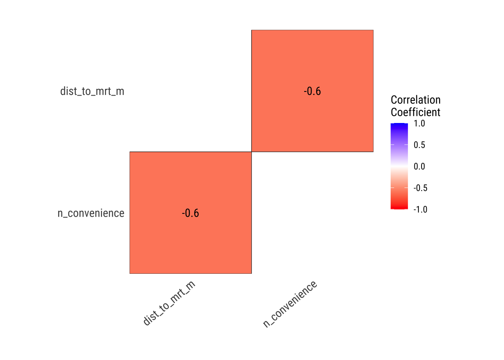
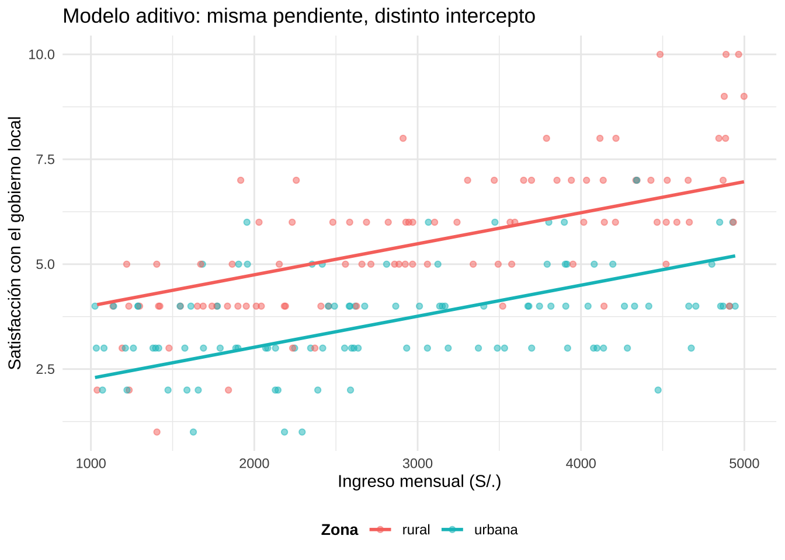

library(gapminder)
library(tidyverse)8 Regresión
En los capítulos anteriores, vimos cómo realizar estimaciones y pruebas de significancia en variables tanto numéricas como categóricas. En este capítulo, nos enfocaremos en analizar la relación entre una variable respuesta numérica y una o más variables explicativas. Este tipo de análisis se conoce como análisis de regresión, uno de los métodos más utilizados en las ciencias sociales para interpretar y modelar situaciones de la realidad social.
8.1 Regresión lineal simple
¿Recuerdas nuestro ejemplo sobre la relación entre el PIB per cápita y la esperanza de vida de los países en 2007, basado en el conjunto de datos de Gapminder? En ese análisis, utilizamos un gráfico de dispersión para visualizar la relación entre estas dos variables.
Filtramos al 2007
gp2007 = gapminder::gapminder %>%
filter(year == 2007)En el eje X colocamos la variable explicativa, el PIB per cápita (gdpPerCap), mientras que en el eje Y situamos la variable respuesta, la esperanza de vida (lifeExp).
g_gp2007 = gp2007 %>%
ggplot(aes(x = log10(gdpPercap),
y = lifeExp)) +
geom_point(color = 'darkgreen') +
theme_minimal()
g_gp2007Podemos apreciar visualmente como a medida que avanzamos por el eje \(x\) (mayor esperanza de vida), las observaciones tienden subir por el eje \(y\) (mayor esperanza de vida).
Otro ejemplo clásico de análisis de regresión lo encontramos cuando queremos entender la relación entre el precio de una vivienda (variable cuantitativa) en función de determinados factores. Toma por ejemplo este conjunto de datos sobre precios de viviendas. Este conjunto contiene información sobre el precio de viviendas en Taiwan y su relación con otras variables como la distancia a la estación de METRO más cercana (dist_to_mrt_m, medida en metros) y el precio promedio por metro cuadrado (price_twd_msq, medido en dólares taiwaneses).
Aquí también podemos utilizar un gráfico de dispersión para explorar cómo el precio de las viviendas podría variar según la proximidad al transporte público.
casas = read_csv('taiwan_casas.csv')glimpse(casas)Rows: 414
Columns: 4
$ dist_to_mrt_m <dbl> 84.87882, 306.59470, 561.98450, 561.98450, 390.56840, …
$ n_convenience <dbl> 10, 9, 5, 5, 5, 3, 7, 6, 1, 3, 1, 9, 5, 4, 4, 2, 6, 1,…
$ house_age_years <chr> "30 to 45", "15 to 30", "0 to 15", "0 to 15", "0 to 15…
$ price_twd_msq <dbl> 11.467474, 12.768533, 14.311649, 16.580938, 13.040847,…Utilizamos geom_point. Dado que hay una gran superposición entre los puntos, es recomendable ajustar el parámetro alpha para controlar la transparencia y así mejorar la visualización, permitiendo distinguir mejor la densidad de los datos.
g_casa = casas %>%
ggplot(aes(x = dist_to_mrt_m, y = price_twd_msq)) +
geom_point(alpha = 0.6, # Útil para distinguir mejor la aglomeración
color = "darkblue") + # Puntos semitransparentes en azul
labs(
title = "Relación entre distancia al Metro y precio por metro cuadrado",
x = "Distancia al metro (metros)",
y = "Precio (TWD/m²)"
) +
theme_minimal()
g_casa
Podemos notar un tendencia negativa conforma la distancia de la vivienda es mayor a una estación de metro. Si nuestro objetivo es analizar cómo los valores de la variable respuesta (\(y\)) cambian en función de la variable explicativa (\(x\)). Al observar los gráficos de dispersión, podemos identificar un patrón: parece que hay una relación entre las variables, y esta relación muestra un comportamiento que, a simple vista, podríamos aproximar como lineal. Basándonos en esta observación, proponemos que la relación entre \(x\) e \(y\) sea lineal, es decir, que los cambios en la variable explicativa (\(x\)) produzcan cambios proporcionales (constantes) en la variable respuesta (\(y\)).
8.1.1 Ecuación de regresión lineal
De hecho, podemos representar la linea recta que mejor represente esta relación entre las variables utilizando geom_smooth y definiendo un modelo lineal o linear model (lm).
g_gp2007 +
labs(title = 'Relación PBI per cápita y esperanza de vida') +
geom_smooth(method = 'lm',
color = 'red',
se = F # Vamos a omitir el error
# estándar por el mometo
)g_casa +
geom_smooth(method = 'lm',
color = 'red',
se = F)
Esta línea no es solo una herramienta visual, también nos permite aproximar cómo los cambios en una variable (la explicativa, \(x\)) afectan a otra variable (la respuesta, \(y\)) de forma intuitiva. Siendo una línea recta, podemos describirla con una fórmula matemática. La ecuación de la regresión lineal es la siguiente:
\[y = \alpha + \beta X\]
Donde:
\[Y(\text{variable respuesta}) = \alpha + \beta X(\text{variable explicativa})\]
Esto permite verla de forma analítica explorando cómo \(y\) responde a diferentes valores de \(x\). Antes de desglosar esta fórmula, pensemos intuitivamente en qué hace esta línea:
Resume un patrón general: Aunque los puntos en el gráfico pueden no alinearse perfectamente, la línea representa la tendencia principal en los datos.
Nos permite simplificar: En lugar de observar todos los puntos dispersos en un gráfico, podemos usar esta línea para interpretar cómo las dos variables están conectadas en términos generales.
Hace que la relación sea predecible: Una vez que tenemos la línea, podemos usarla para calcular aproximadamente qué valor de \(y\) esperaríamos para un determinado valor de \(x\).
Ahora bien, si fórmula que describe esta línea es:
\[Y(\text{variable respuesta}) = \alpha + \beta X(\text{variable explicativa})\]
Vamos a aclarar cada uno de sus componentes. Sabemos que buscamos ajustar una línea recta a los datos. Una línea recta se puede expresar en una ecuación y se definen por estas dos propiedades: su intercepto y su pendiente.
- \(\alpha\): Es el intercepto. Es el punto donde la línea cruza el eje \(y\). Nos dice el valor de \(y\) cuando \(x = 0\).
- \(\beta\): Es la inclinación o pendiente de la línea. Indica cuánto cambia \(y\) en promedio, por cada unidad (1) que cambia \(x\).
En el modelo, la ecuación de regresión toma estos dos elementos como los parámetros del modelo.
El intercepto, representado como (\(\alpha\)) en la ecuación de la línea recta (\(y = \alpha + \beta x\)), es el punto donde la línea cruza el eje (\(y\)). Es decir, nos indica el nivel inicial de la variable dependiente (\(y\)) cuando la variable independiente (\(x\)) es igual a cero. En otras palabras, el intercepto nos da una idea del estado de (\(y\)) en ausencia de cualquier influencia de (\(x\)). En algunos casos, este valor tiene un significado práctico claro, pero en otros puede ser más abstracto, especialmente si (\(x = 0\)) no tiene sentido en el contexto del problema.

La pendiente, representada como (\(\beta\)) en la misma ecuación, describe cómo cambia la variable dependiente (\(y\)) por cada unidad adicional de la variable independiente (\(x\)). Dicho de otra manera, la pendiente nos indica la tasa de cambio de (\(y\)) con respecto a (\(x\)). Una pendiente positiva (\(\beta > 0\)) significa que (\(y\)) aumenta a medida que (\(x\)) lo hace, mostrando una relación directa entre las dos variables. Por el contrario, una pendiente negativa (\(\beta < 0\)) implica que (\(y\)) disminuye a medida que (\(x\)) aumenta, lo que refleja una relación inversa. Si la pendiente es igual a cero (\(\beta = 0\)), significa que (\(y\)) no cambia en absoluto con (\(x\)), lo que indica que las dos variables no están relacionadas.
Mientras el intercepto determina el punto de inicio de la línea en el eje (\(y\)), la pendiente define su inclinación. El hecho de que podamos asignarle una ecuación a la relación cuantificarla y hacer predicciones. Por ejemplo, sabiendo el intercepto y la pendiente, podemos calcular el valor esperado de (\(y\)) para cualquier valor de (\(x\)).
Para el caso de las viviendas:
g_casa +
geom_smooth(method = 'lm',
color = 'red',
se = F)
Puedes interactuar con los parámetros de la ecuación lineal en la Datáfora Interactiva: [Click Aquí]
O usa el QR:

En R podemos ajustar el modelo de regresión lineal y extraer los parametros de ecuación usando lm(). Su estructura básica sigue la lógica de una fórmula: lm(y ~ x, data = ...), donde y representa la variable dependiente o respuesta, y x la variable independiente. El símbolo ~ se lee como “explicado por” o “en función de”, por lo que la expresión y ~ x indica que estamos tratando de explicar los valores de y a partir de los valores de x. El argumento data = ... especifica el nombre del data frame donde se encuentran esas variables.
# Ajustamos el modelo lineal
modelo = lm(price_twd_msq ~ dist_to_mrt_m, data = casas)
# Vemos los coeficientes (intercepto y pendiente)
coef(modelo) (Intercept) dist_to_mrt_m
13.873351606 -0.002197292 Con esta información, ya podemos escribir la ecuación del modelo muestral:
\[ \text{Precio de la vivienda} = 13.87 - 0.0022 \cdot \text{Distancia en }m^2 \]
Esto significa que, en base a la información que tenemos disponible sobre las viviendas, la pendiente del modelo es \(-0.0022\). Es decir, por cada metro adicional de distancia a la estación de metro, el precio promedio por metro cuadrado disminuye en alrededor de 0.0022 dólares taiwaneses. Por otro lado, el intercepto es \(13.87\), lo que indica que cuando la distancia a la estación es cero (es decir, en una vivienda ubicada justo al lado del metro, \(x=0\)) el precio estimado por metro cuadrado sería de 13.87 dólares taiwaneses. Si bien en la práctica puede que no existan viviendas exactamente a cero metros del metro, este valor nos da una referencia inicial del modelo y completa la ecuación de la línea recta ajustada.
Aunque esta representación matemática puede parecer un poco abstracta al principio, es simplemente una manera formal de expresar algo que podemos ver intuitivamente en el gráfico. La línea recta nos ayuda a simplificar y entender mejor los patrones en nuestros datos. Sin embargo, como toda simplificación, debemos ser conscientes de sus limitaciones: no todos los puntos se alinean perfectamente con la línea, por lo que la relación que estamos estableciendo es una aproximación. Todos los modelos son aproximaciones simples de la realidad. Un modelo es, en esencia, una representación simplificada de la relación entre variables en una población. Nos ayuda a interpretar patrones observados en los datos.
Sin embargo, es fundamental destacar que este tipo de modelos no pretende capturar toda la complejidad de la realidad. Más bien, funcionan como una herramienta para aproximarnos a las relaciones observadas en los datos. Es crucial recordar que correlación no implica causalidad, y que la relación entre variables dentro de un modelo estadístico no siempre refleja un vínculo de causa y efecto.
Por ejemplo, si un modelo muestra que un mayor PIB per cápita se asocia con una mayor esperanza de vida, esto no significa que un país pueda simplemente aumentar su PIB per cápita y, como resultado directo, su población vivirá más tiempo. Lo que el modelo realmente indica es que, según los datos disponibles, al comparar dos países, aquel con un PIB per cápita más alto tiende a presentar una mayor esperanza de vida. Sin embargo, esto no implica que el PIB sea el único elemento asociado a esta diferencia, sino que señala una relación observada en los datos, la cual puede estar influenciada por múltiples factores adicionales (debemos ser muy cautos al interpetar estos modelos como asociaciónes, no causas)
Otro elementos importante a considerar es que, no todas las relaciones entre variables son lineales, por lo que antes de ajustar un modelo de regresión, es fundamental visualizar los datos mediante un gráfico de dispersión. Esto permite identificar si la relación observada puede representarse adecuadamente con una línea recta o si, por el contrario, sería más apropiado considerar otro tipo de modelado.
Por ejemplo, en ambos casos, aunque es posible ajustar una línea recta para describir la relación, se observa claramente que esta no captura correctamente el patrón de los datos para el primer caso. En consecuencia, una regresión lineal no sería el modelo más adecuado, y sería necesario explorar alternativas que reflejen mejor la estructura de la relación entre las variables.
De hecho, podemos recurrir a otros métodos para construir modelos (aproximaciones de la realidad) que no dependan de una fórmula lineal. LOESS (Local Regression Smoothing), por ejemplo, es un enfoque no paramétrico que permite suavizar los datos y detectar tendencias en relaciones no lineales entre variables. A diferencia de la regresión lineal tradicional, que impone una relación global fija en todo el conjunto de datos, LOESS realiza múltiples ajustes locales sobre subconjuntos, asignando mayor peso a los puntos cercanos.
g_gp2007 +
labs(title = 'Relación PBI per cápita y esperanza de vida') +
geom_smooth(method = 'loess', # Metodo loess en ves de lm
color = 'red',
se = F
)g_casa +
geom_smooth(method = 'loess',
color = 'red',
se = FALSE)Ahora bien, aunque métodos como LOESS pueden ofrecer una representación más precisa de la relación entre variables, especialmente cuando esta no es lineal, su principal desventaja es que resultan menos interpretables, ya que no generan una ecuación clara que podamos analizar o comunicar fácilmente (como la ecuación lineal).
Por esta razón, y con el objetivo de facilitar la comprensión del modelo, en esta etapa nos centraremos únicamente en las regresiones lineales simples, que si bien pueden ser menos precisas en algunos casos, permiten identificar patrones generales de forma directa y facilmente interpetable. Estoy seguro de que puede proporcionará un punto de partida útil para el propósito de este libro, pero ten en cuenta de que no es el único.
8.1.2 Mínimos cuadrados ordinarios (OLS)
Ahora que entendemos la utilidad de una línea recta para modelar relaciones entre variables, el siguiente paso es preguntarnos: ¿cómo se determina esa línea? ¿De dónde sale y cómo sabemos cuál es la más representativa de la relación observada en los datos? Esta línea no se elige al azar, sino que se construye a partir de un método formal conocido como Mínimos Cuadrados Ordinarios (OLS, por sus siglas en inglés). El objetivo del OLS es encontrar los valores óptimos del intercepto (\(\alpha\)) y la pendiente (\(\beta\)) que definan la línea recta que mejor se ajusta a los datos observados, minimizando la suma de los errores al cuadrado entre los valores reales y los valores predichos por el modelo.
Pero, ¿qué significa “mejor ajuste”? Intuitivamente, queremos que la línea esté lo más cerca posible de todos los puntos del gráfico. Para lograr esto, el OLS minimiza la suma de los errores al cuadrado. El “error” en este contexto se refiere a la distancia vertical entre un punto observado (\(y_i\)) y el valor predicho por la línea (\(\hat{y}_i\)). Representa cuánto se desvía el modelo de los datos reales en cada punto.
Si un punto está exactamente sobre la línea, el error es cero, si está por encima o por debajo, el error indica cuánto el modelo subestimó o sobreestimó el valor real. El error captura las imperfecciones del modelo. Es decir:
\[ \text{Error} = y_i - \hat{y}_i \]
Donde:
(\(y_i\)) es el valor observado de la variable dependiente para un punto específico.
(\(\hat{y}_i\)) es el valor predicho por la línea para el mismo punto.
El método OLS eleva al cuadrado estas diferencias y luego suma todos los valores. Esto da como resultado una métrica conocida como la suma de los errores al cuadrado. El OLS ajusta la línea recta de manera que esta suma sea lo más pequeña posible. En otras palabras, la línea resultante es aquella que minimiza la diferencia total entre los valores observados y los valores predichos.
\[ \text{Suma de errores al cuadrado} = \sum (y_i - \hat{y}_i)^2 \]
Pero ¿por qué minimizamos el cuadrado de los errores y no simplemente los errores? Elevarlos al cuadrado tiene dos ventajas importantes:
- Penaliza más los errores grandes, lo que asegura que la línea no esté significativamente lejos de ningún punto.
- Convierte todos los errores en valores positivos, lo que evita que los errores positivos y negativos se anulen mutuamente.
Este método asegura que la línea recta que obtenemos sea, en cierto sentido, la “mejor representación posible” de los datos según el criterio de los mínimos cuadrados. Al aplicar el OLS, establecemos la linea recta adecuada para nuestras observaciones y, en consecuencia, podemos determinar numéricamente los valores del intercepto (\(\alpha\)) y la pendiente (\(\beta\)) que la definen.
8.1.3 Desviación estándar condicional
Cuando usamos una línea de regresión para describir la relación entre dos variables, debemos recordar que no estamos representando los datos de manera exacta. La línea de regresión es una aproximación que resume, de forma promedio, cómo se relacionan las variables (\(x\)) (predictora) e (\(y\)) (respuesta). En realidad, los puntos de los datos suelen estar dispersos alrededor de esta línea, lo que significa que existe variación en los valores reales de (\(y\)) para cada (\(x\)).
Para capturar esta dispersión, el modelo introduce un parámetro adicional, (\(\sigma\)), que representa la desviación estándar condicional. Este parámetro mide, en promedio, cuánto varían los valores de (\(y\)) respecto a la línea de regresión para un valor dado de (\(x\)). Si (\(\sigma\)) es pequeño, significa que los puntos están más cerca de la línea y que el modelo describe mejor la relación entre las variables. Por el contrario, si (\(\sigma\)) es grande, la dispersión alrededor de la línea es mayor, lo que indica que el modelo es menos preciso en su descripción.
Es importante resaltar que en este modelo estamos asumiendo que la desviación estándar condicional, representada por \(\sigma\), es la misma para todos los valores de \(x\). Esto significa que la cantidad de variación de los valores de \(y\) alrededor de la línea de regresión es constante en todo el rango de \(x\), una condición conocida como homocedasticidad. En otras palabras, independientemente del valor de \(x\), se espera que la dispersión de los puntos alrededor de la línea siga siendo similar.
Pero, ¿qué significa esto realmente? Tomando como ejemplo la relación entre el precio de una vivienda y la distancia a la estación de metro, debemos tener en cuenta que al ajustar una línea recta no estamos diciendo que cada valor de \(x\) se asocie con un único valor exacto de \(y\), sino que la línea representa el valor promedio esperado de \(y\) para cada valor de \(x\). Es decir, no es una predicción exacta, sino una tendencia general.
Podemos extraerlo de la siguiente forma
summary(modelo)$sigma[1] 3.046457Este valor significa que, en promedio, los precios reales por metro cuadrado se desvían unos 3.05 dólares taiwaneses del valor estimado por el modelo. Por ahora, nos enfocamos en entender que este modelo es solo una aproximación, y que \(\sigma\) nos da una idea clave de cuánta variabilidad existe alrededor de esa tendencia. Más adelante, abordaremos con más detalle estas suposiciones y su impacto en el análisis y la interpretación de los resultados.
8.1.4 La correlación y la pendiente
Para poder evaluar la calidad del ajuste del modelo podemos utilizar una métrica que ya hemos visto previamente: el coeficiente de correlación de Pearson. Como discutimos en el capítulo de estadística descriptiva, este indicador no solo mide la fuerza y la dirección de la relación entre las variables, sino que también nos da una idea de qué tan lineal es dicha relación. Una correlación cercana a 1 o -1 indica que los puntos están cerca de la línea de regresión, mientras que valores más bajos sugieren mayor dispersión alrededor de la línea.
Sabemos que la pendiente (\(\beta\)) de la línea de regresión nos dice en qué dirección va la relación (positiva o negativa) y cuánto cambia la variable dependiente (\(y\)) por cada unidad de cambio en la variable independiente (\(x\)). Sin embargo, debemos ser cuidadosos al interpretar la pendiente como una medida de la fuerza de la relación. La razón de esto es que el valor numérico de la pendiente depende de las unidades en las que estén medidas las variables.
Agresti (2018), en Statistical Methods for the Social Sciences, ilustra claramente cómo \(\beta\) depende de las unidades de medición. Supongamos que \(y\) representa la tasa de homicidios por cada 100,000 habitantes y \(x\) es el porcentaje de personas que viven bajo la línea de pobreza. En este caso, una ecuación de regresión podría ser:
\[ \hat{y} = -0.86 + 0.58x \]
Aquí, la pendiente (\(\beta = 0.58\)) significa que, por cada incremento de (1%) en la pobreza (\(x\)), se espera un aumento de 0.58 homicidios por cada 100,000 habitantes en la tasa de homicidios (\(y\)). Sin embargo, si cambiamos las unidades de medición de (\(y\)) para expresar la tasa de homicidios por cada 1,000,000 habitantes, el valor de la pendiente también cambia. Como (\(1,000,000\)) es 10 veces (\(100,000\)), la pendiente se multiplicará por 10, resultando en:
\[ \beta = 5.8 \]
Esto significa que ahora, por cada incremento de (\(1 \%\)) en la pobreza, se espera un aumento de 5.8 homicidios por cada 1,000,000 habitantes.
Es importante notar que este cambio en la pendiente no altera la relación entre las variables, ya que esta depende exclusivamente de los datos subyacentes y no de las unidades en que se expresan. El cambio afecta únicamente la escala de la pendiente, no la fuerza o naturaleza intrínseca de la asociación. Por ello, no debemos interpretar (\(\beta\)) como una medida de la fuerza de la relación, ya que su valor puede ser manipulado simplemente cambiando las unidades de las variables.
Aquí es donde el coeficiente de correlación (\(r\)) se vuelve especialmente útil. A diferencia de la pendiente (\(\beta\)), el valor de (\(r\)) no depende de las unidades de medición. Esto significa que, sin importar cómo midamos las variables (\(x\)) e (\(y\)), ya sea en porcentajes, tasas o cantidades absolutas, el coeficiente de correlación siempre será el mismo. Aunque el cálculo detrás de (\(r\)) implica ciertos ajustes matemáticos para tomar en cuenta la variabilidad de las variables, no es necesario conocer esos detalles para entender su utilidad. Por lo tanto, aunque la pendiente es útil para interpretar el efecto de (\(x\)) sobre (\(y\)) en términos absolutos, el coeficiente de correlación proporciona una medida estándar que nos permite comparar la fuerza de las relaciones entre diferentes pares de variables, independientemente de sus unidades.
Puedes interactuar con la correlación en la Datáfora Interactiva: [Click Aquí]
O usa el QR:
8.1.5 Coeficiente de determinación
Una vez que ajustamos el modelo, es natural preguntarse qué tan bien está funcionando. Para eso usamos el coeficiente de determinación, representado como \(r^2\). Esta medida nos dice qué proporción de la variabilidad de la variable dependiente (\(y\)) puede ser explicada por la variable independiente (\(x\)).
Para entenderlo, se comparan dos enfoques para predecir \(y\). El primero consiste en usar únicamente el promedio de \(y\) (\(\bar{y}\)) como predicción constante, sin tomar en cuenta \(x\). Esto genera una predicción básica pero no considera ninguna relación entre \(x\) e \(y\). El segundo enfoque utiliza la ecuación de regresión:
\[ y = \alpha + \beta X \]
Esta ecuación incorpora la relación observada entre \(x\) e \(y\), ajustando las predicciones según los valores de \(x\). La utilidad del modelo de regresión se evalúa midiendo cuánto se reducen los errores de predicción al pasar de usar \(\bar{y}\) como predicción a usar \(\hat{y}\).
El cálculo de \(r^2\) se basa en la proporción de reducción del error. Primero, se mide el error total al usar \(\bar{y}\) para predecir \(y\), llamado suma total de cuadrados (\(TSS\)):
\[ TSS = \sum (y - \bar{y})^2 \]
Luego, se mide el error al usar la ecuación de regresión, llamado suma de cuadrados de los errores (\(SSE\)):
\[ SSE = \sum (y - \hat{y})^2 \]
La reducción relativa del error se calcula como:
\[ r^2 = \frac{TSS - SSE}{TSS} \]
Pero, ¿qué significa esto de forma más intuitiva? Volviendo al ejemplo de las viviendas, imagina que estás tratando de predecir el precio de una vivienda en función de su distancia a la estación de metro. Puedes extrar el coefiecente de la siguiente forma:
summary(modelo)$r.squared[1] 0.4537543Si obtenemos un \(r^2 = 0.45\), esto quiere decir que el 45% de la variabilidad en los precios puede explicarse solo a partir de la distancia a la estación de metro. En otras palabras, conocer cuán lejos está una vivienda del metro sí aporta información útil sobre su precio, pero también nos deja claro que el 55% restante de la variabilidad se debe a otros factores no incluidos en el modelo, como el tamaño del inmueble, su estado de conservación, el nivel socioeconómico de la zona, o simplemente a variaciones aleatorias.
Para capturar una mayor proporción de esa variabilidad, será necesario realizar nuevas evaluaciones e incorporar más variables al modelo, algo que abordaremos más adelante en el apartado dedicado a la regresión múltiple.
8.1.6 Resumen del modelo en R con summary()
En R podemos ajustar el modelo con lm(), y una vez que le asignamos un nombre, podemos usar summary() para obtener un resumen completo que incluye todos los elementos que hemos comentado hasta el momento y algunos más.
summary(modelo)
Call:
lm(formula = price_twd_msq ~ dist_to_mrt_m, data = casas)
Residuals:
Min 1Q Median 3Q Max
-10.7097 -1.8177 -0.3617 1.4616 22.2338
Coefficients:
Estimate Std. Error t value Pr(>|t|)
(Intercept) 13.8733516 0.1974616 70.26 <2e-16 ***
dist_to_mrt_m -0.0021973 0.0001188 -18.50 <2e-16 ***
---
Signif. codes: 0 '***' 0.001 '**' 0.01 '*' 0.05 '.' 0.1 ' ' 1
Residual standard error: 3.046 on 412 degrees of freedom
Multiple R-squared: 0.4538, Adjusted R-squared: 0.4524
F-statistic: 342.2 on 1 and 412 DF, p-value: < 2.2e-16
En la imagen podemos observar claramente los valores estimados para los parámetros del modelo: el intercepto y la pendiente, que se encuentran en la parte superior de la tabla. Justo al costado de cada uno, también aparecen otras columnas con información adicional como el error estándar (Std. Error), el valor t (t value) y el valor p (Pr(>|t|)), que nos permiten hacer inferencias estadísticas sobre estos coeficientes. Por ahora, dejaremos esos elementos para la siguiente sección del capítulo, donde los abordaremos con más detalle.
En la parte inferior del resumen, se presentan dos indicadores importantes que ya hemos discutido: la desviación estándar condicional (Residual standard error), que nos dice cuánto tienden a desviarse los valores reales de los valores estimados por el modelo, y el coeficiente de determinación \(r^2\), que mide qué proporción de la variabilidad total en el precio por metro cuadrado es explicada por la distancia a la estación de metro.
8.2 Inferencia de coeficientes para el modelo lineal
Hasta este punto, ya hemos explorado todas las características de un modelo lineal: cómo se ajusta, qué representa y cómo evaluamos su desempeño. Sin embargo, al igual que sucede con los resúmenes estadísticos como la media o la desviación estándar, en la práctica no trabajamos con toda la población, sino con una muestra limitada de datos. Esto significa que el modelo lineal que construimos no es el modelo de la población, sino una estimación basada en los datos a los que tuvimos acceso (la muestra). Y aquí es donde entra en juego la inferencia: lo que nos interesa ahora no es solo ajustar una línea, sino preguntarnos si esa relación entre las dos variables que observamos en la muestra es suficientemente fuerte o consistente como para pensar que también existe en la población completa. En este contexto, la fórmula cambia ligeramente, porque lo que estamos evaluando ya no es solo el modelo ajustado, sino la plausibilidad de esa relación a nivel poblacional.
En el caso de la regresión lineal, cuando hablamos del modelo poblacional, la relación entre las variables se expresa de la siguiente manera:
\[ Y = \alpha + \beta X \]
Aquí, \(\alpha\) y \(\beta\) son parámetros poblacionales desconocidos, es decir, todas aquellas influencias sobre \(Y\) que no se explican a través de \(X\). Sin embargo, como en la práctica no tenemos acceso a toda la población, lo que hacemos es trabajar con una muestra y, por lo tanto, estimar esos parámetros a partir de los datos disponibles.Es por ello que el modelo cambia de forma y se convierte en una versión estimada:
\[ \hat{Y} = a + bX \]
En esta nueva expresión, \(a\) y \(b\) son los estadísticos muestrales que usamos para aproximar a \(\alpha\) y \(\beta\), respectivamente. Es decir, son los valores que obtenemos al aplicar el método de Mínimos Cuadrados Ordinarios (OLS) sobre nuestra muestra. La diferencia entre el valor real \(Y\) y el valor estimado \(\hat{Y}\) ahora se denomina residuo, y se representa con:
\[ e = Y - \hat{Y} \]
Este cambio de notación no es solo simbólico: refleja una transición fundamental en la forma de pensar el modelo. Ya no estamos afirmando con certeza cómo se comporta la población, sino construyendo una estimación con incertidumbre basada en los datos que tenemos.
Ahora que contamos con los valores estimados \(a\) y \(b\), en lugar de los parámetros poblacionales \(\alpha\) y \(\beta\), el objetivo pasa a ser poner a prueba la existencia de una relación lineal entre las variables. Para ello, utilizamos las herramientas de la inferencia: la estimación y el contraste de hipótesis, que ya conocemos por otros contextos, como el análisis de medias o proporciones.
En este caso, nos centraremos especialmente en el estadístico \(b\), que es la estimación puntual del parámetro \(\beta\). Recordemos que \(\beta\) nos da información clave sobre la dirección y magnitud de la relación entre las variables: si \(\beta > 0\), la relación es creciente; si \(\beta < 0\), es decreciente; y si \(\beta = 0\), no hay relación lineal.
Al igual que otros estadísticos, \(b\) está sujeto a variabilidad muestral y, gracias al Teorema del Límite Central (TLC), sabemos que, bajo ciertas condiciones, su distribución se aproxima a una distribución normal. Esto nos permite aplicar la misma intuición que usamos con otros estadísticos: construir un intervalo de confianza alrededor del valor observado de \(b\) y realizar un contraste de hipótesis.
8.2.1 Estimación de la pendiente
Una vez que hemos ajustado nuestro modelo de regresión lineal simple, lo que obtenemos en la práctica no es el verdadero parámetro poblacional \(\beta\), sino una estimación muestral, a la que llamamos \(b\). Como hemos visto, \(b\) representa la pendiente de la recta ajustada y nos indica cuánto cambia, en promedio, la variable dependiente \(y\) por cada unidad de cambio en la variable independiente \(x\).
Pero, como toda estimación basada en una muestra, \(b\) está sujeta a variabilidad muestral. Es decir, si tomáramos otra muestra diferente de la población, obtendríamos un valor distinto de \(b\). Para poder trabajar con esta incertidumbre, recurrimos a técnicas de inferencia estadística que nos permiten construir intervalos de confianza alrededor del valor observado de \(b\).
Bajo determinados supuestos que el modelo lineal clásico establece (linealidad, independencia, homocedasticidad y normalidad del error), el estadístico \(b\) se distribuye aproximadamente como una normal. Con esa información, podemos construir un intervalo de confianza al 95% para \(\beta\), utilizando la distribución t de Student con \(n - 2\) grados de libertad:
\[ IC_{95\%}(\beta) = b \pm t_{(1 - \alpha/2, \, n - 2)} \cdot \text{EE}(b) \]
Este intervalo nos da un rango plausible de valores para el verdadero \(\beta\) en la población, asumiendo que el modelo está bien especificado y que los supuestos se cumplen. Recuerda que para in intervalo de confianza es fundamental conocer el Error Estándar: \(\text{SE}(b)\). Este valor nos da una idea de cuánta incertidumbre hay en la estimación de la pendiente. Mientras más pequeño sea el error estándar, más precisa será nuestra estimación y más estrecho será el intervalo. La fórmula es algo más complicada por lo que, para mantener la simplicidad del libro, no nos centraremos en ella. R ya se encarga de hacer este cálculo por nosotros al ajustar el modelo, por lo que en este capítulo nos enfocaremos únicamente en interpretar el resultado y en comprender lo que significa en el contexto del análisis.
Para nuestro nuestro modelo de viviendas podemos ver que para nuestra variable dist_to_mrt_m la columna Std. Error nos indica el EE
Con el valor estimado de la pendiente \(b = -0.0021973\) y su error estándar \(\text{SE}(b) = 0.0001188\), podemos construir manualmente un intervalo de confianza al 95% para el parámetro poblacional \(\beta\).
Recordemos que al usar un nivel de confianza del 95%, estamos dejando un 2.5% de probabilidad en cada extremo de la distribución t, por lo que buscamos el cuantil \(t_{(1 - \alpha/2)} = t_{0.975}\), considerando los grados de libertad \(df = n - 2\) (en regresión lineal simple, siempre restamos 2: uno por la pendiente y otro por el intercepto).
Sabemos que el modelo se ha ajustado con 414 observaciones, por lo que los grados de libertad del modelo son:
\[ df = 414 - 2 = 412 \]
Al trabajar con un nivel de confianza del 95%, estamos dejando un 5% de probabilidad repartida en ambos extremos de la distribución, es decir, 2.5% a cada lado. Por eso usamos el valor crítico de la distribución t de Student para \(df = 412\) y una cola de 2.5%:
qt(0.975, df = 412)[1] 1.965739Con esto, el intervalo de confianza se construye como:
\[ IC_{95\%}(\beta) = b \pm t_{(0.975, df=412)} \cdot \text{SE}(b) \]
Sustituyendo los valores:
\[ IC_{95\%}(\beta) = -0.0021973 \pm 1.966885 \cdot 0.0001188 \]
Calculamos el margen de error:
\[ 1.966885 \cdot 0.0001188 \approx 0.0002337 \]
Por lo tanto, el intervalo de confianza es:
\[ [-0.002431, \; -0.001964] \]
Esto significa que, con un 95% de confianza, el valor verdadero de la pendiente poblacional \(\beta\) se encuentra entre \(-0.002431\) y \(-0.001964\).
8.2.2 Prueba de independencia: contraste de hipótesis sobre \(\beta\)
Además de estimar un intervalo para \(\beta\), también podemos realizar un contraste de hipótesis formal para evaluar si la relación observada entre \(x\) e \(y\) es estadísticamente significativa. En este contexto, llevar a cabo una prueba de independencia implica preguntarnos si la relación que vemos en los datos es lo suficientemente consistente como para pensar que no se debe simplemente al azar.
Al igual que en otros contrastes que hemos trabajado, partimos de la hipótesis nula (\(H_0\)), que plantea la ausencia de efecto, es decir, que no existe una relación lineal entre las variables. En términos del modelo, esta hipótesis se formula como que la pendiente poblacional es cero, es decir, \(\beta = 0\). Frente a esta, la hipótesis alternativa (\(H_1\)) sostiene que sí hay un efecto, es decir, que la pendiente es distinta de cero y, por tanto, sí existe una relación lineal significativa entre \(x\) e \(y\).
Por lo tanto, planteamos las hipótesis de la siguiente forma:
Hipótesis nula:
\[ H_0: \beta = 0 \] No hay relación lineal en la población; \(x\) e \(y\) son independientes.Hipótesis alternativa:
\[ H_1: \beta \neq 0 \] Existe una relación lineal entre \(x\) e \(y\).
Donde el estadístico \(t\) para este contraste se calcula como:
\[ t = \frac{b - 0}{\text{SE}(b)} \]
Este valor nos indica cuántas desviaciones estándar se encuentra \(b\) por encima o por debajo de 0, y se conoce como estadístico t. Lo comparamos con una distribución t de Student con \(n - 2\) grados de libertad, ya que en regresión lineal simple estimamos dos parámetros: el intercepto y la pendiente. En el resumen del modelo, este valor aparece en la columna t value.
Al tener un \(t\)-valor de -18.5, podemos observar que la probabilidad de tener un \(\beta\) como el de nuestra muestra bajo \(H_0\) es extremamente bajo. Podemos calcularlo para ser más exactos:
pt(-18.5, df = 412)[1] 2.313134e-56De hecho, si observas bien, ya está calculado al lado.
Siguiendo la lógica de pruebas anteriores, el valor p asociado a ese estadístico \(t\) nos da la probabilidad de obtener un valor tan extremo como el observado, bajo el supuesto de que la hipótesis nula es verdadera, es decir, si \(\beta = 0\). Si el valor p es menor que el nivel de significancia que hayamos definido (por ejemplo, \(\alpha = 0.05\)), entonces rechazamos la hipótesis nula y sostenemos que la relación lineal observada en la muestra es suficientemente fuerte como para no atribuirla al azar. En ese caso, aceptamos la posibilidad de que \(x\) e \(y\) no sean independientes.
La función summary() en R indica visualmente el nivel de significancia con asteriscos al costado de cada coeficiente: mientras más asteriscos aparecen, más pequeño es el valor p.
Cabe resaltar que esta misma conclusión también podría haberse alcanzado a partir del intervalo de confianza para \(\beta\). Como vimos anteriormente, el intervalo al 95% no incluye el valor 0, lo cual implica que los valores plausibles para la pendiente poblacional son todos negativos. En otras palabras, incluso considerando la variabilidad muestral, el efecto negativo de la distancia sobre el precio se mantiene dentro de todo el rango de valores posibles definidos por el intervalo. Por eso, tanto el contraste de hipótesis como el intervalo de confianza apuntan en la misma dirección: la relación negativa observada entre la distancia a la estación de metro y el precio por metro cuadrado es suficientemente consistente como para no atribuirla únicamente al azar.
8.2.3 Supuestos y calidad de ajuste
Al igual que el resto de pruebas que ya hemos visto, la regresión lineal simple también se construye sobre una serie de supuestos que nos permiten interpretar correctamente sus resultados y confiar en las conclusiones que se derivan del modelo y las pruebas que hemos realizado.
En primer lugar, se asume que la relación entre la variable independiente \(x\) y el valor medio de la variable dependiente \(y\) es lineal, es decir, que puede aproximarse razonablemente bien mediante una recta. Esto no implica que la relación real sea exactamente lineal( de hecho, rara vez lo es) sino que la línea proporciona una simplificación de la tendencia general. Por eso, antes de ajustar cualquier modelo, es importante examinarlo con un gráfico de dispersión para verificar visualmente si hay indicios de linealidad o si, por el contrario, la relación tiene una forma curva, más compleja o simplemente no hay relación alguna, lo que indicaría que los cambios en \(x\) no explican las variaciones en \(y\). Sin este primer supuesto, ni siquiera tendría sentido calcular una pendiente.
Pero además de este supuesto de linealidad, el modelo de regresión simple reposa sobre otros supuestos estadísticos:
Se asume que los errores del modelo (los residuos) son independientes entre sí. Esto significa que el error cometido al estimar un valor de \(y\) no debe estar relacionado con el error cometido al estimar otro.
Se presupone que los errores tienen varianza constante a lo largo de todos los valores de \(x\), lo que se conoce como homocedasticidad. Si los errores tienden a ser pequeños para ciertos valores de \(x\) y grandes para otros (heterocedasticidad), los errores estándar de los coeficientes estarán mal calculados, y en consecuencia, los intervalos de confianza y los valores p podrían resultar engañosos.
Además, se asume que los errores se distribuyen normalmente alrededor de la recta de regresión. Este supuesto es clave cuando queremos construir intervalos de confianza o realizar contrastes de hipótesis, ya que garantiza que los estadísticos del modelo (como la pendiente \(b\)) tendrán una distribución muestral que puede ser razonablemente aproximada por una distribución \(t\). En muestras pequeñas, si los residuos son marcadamente no normales, los valores \(p\) pueden no ser demasiado confiables, aunque en muestras grandes, el Teorema del Límite Central suaviza este problema.
Por último, como en cualquier análisis inferencial, se parte del supuesto de que los datos provienen de una muestra aleatoria representativa de la población. Si los datos están sesgados, o si hay algún mecanismo de selección que no ha sido considerado, las estimaciones pueden ser internamente coherentes pero irrelevantes a nivel poblacional. En ese caso, cualquier generalización que se haga desde la muestra al conjunto más amplio será injustificada y poco realista, algo que por momento se olvida.
Todos estos supuestos están profundamente entrelazados con la validez del modelo y la fiabilidad de las inferencias que realizamos a partir de él. Y aunque se suelen presentar por separado, en la práctica los analizamos a través de un mismo enfoque: el estudio del comportamiento de los residuos.
Recuerda que los residuos son las partes de la relación que el modelo no ha podido capturar. Si los residuos muestran patrones sistemáticos, acumulaciones, variaciones anómalas o comportamientos extremos, eso indica que el modelo está dejando aspectos importantes sin capturar, lo que pone en cuestión la validez de los coeficientes estimados y de cualquier inferencia que se derive del modelo.
Por eso, el análisis de residuos es una herramienta clave de diagnóstico, y en regresión lineal existen cuatro gráficos principales que nos permiten inspeccionarlos desde distintos ángulos:
- Residuals vs Fitted
Este gráfico nos permite evaluar la validez del supuesto de linealidad. Si el modelo es adecuado, deberíamos observar una nube de puntos dispersa alrededor de la línea horizontal en cero, sin patrones definidos. Ondas, curvas o estructuras indican que el modelo lineal no está capturando adecuadamente la forma real de la relación entre \(x\) e \(y\).
plot(modelo, which = 1)Podemos ver que, en el caso de nuestro modelo para las viviendas, aunque la nube de puntos en el gráfico Residuals vs Fitted se distribuye de forma más o menos horizontal, la línea de suavizado roja muestra una ligera curvatura, especialmente en los extremos. Esto sugiere que la relación entre la distancia al metro y el precio por metro cuadrado no es perfectamente lineal, y que el modelo tiende a ajustarse peor conforme aumentan los valores de \(x\).
- Normal Q-Q Plot
Aquí examinamos si los residuos siguen una distribución aproximadamente normal, como lo requiere la inferencia basada en mínimos cuadrados. Si los residuos se alinean con la línea diagonal, el supuesto de normalidad es razonable. Desviaciones sistemáticas (especialmente en los extremos) pueden señalar asimetría, colas pesadas o valores atípicos. El eje \(y\) representa ambos extremos de la distribución en desviaicones estándar.
plot(modelo, which = 2)Para nuestro modelo, la mayor parte de los puntos siguen bien la línea diagonal, lo que sugiere una distribución aproximadamente normal. Sin embargo, en los extremos (colas) hay algunas desviaciones, especialmente por encima del percentil 95.
- Scale-Location (Spread-Location)
Este gráfico nos ayuda a verificar el supuesto de homocedasticidad, es decir, que la varianza de los errores sea constante para todos los valores ajustados. En un modelo bien especificado, deberíamos ver los puntos distribuidos de forma pareja a lo largo de la línea horizontal. Si en cambio se observa una forma de embudo (estrecho al inicio y abierto al final o viceversa), es una señal clara de heterocedasticidad.
plot(modelo, which = 3)Para nuestro modelo, la dispersión de los puntos aumenta ligeramente con los valores ajustados: los residuos son más pequeños cuando el valor ajustado es bajo, y más grandes a medida que se incrementa. Esto sugiere una posible heterocedasticidad leve.
- Residuals vs Leverage
El gráfico Residuals vs Leverage nos permite identificar observaciones que podrían estar influyendo desproporcionadamente en el ajuste del modelo, es decir, puntos que no solo están alejados del centro de los datos en el eje \(x\) (alto leverage), sino que además presentan residuos grandes. Estos casos son importantes porque, por su ubicación y comportamiento, tienen mayor capacidad de “empujar” o inclinar la recta de regresión hacia sí mismos en detrimento de las demás observaciones, afectando la estimación de los coeficientes. No todo punto con alto leverage es problemático, pero cuando se combina con un residuo elevado, conviene prestar atención: puede estar distorsionando el modelo más de lo que parece. En este gráfico, las líneas punteadas indican valores de referencia según la Cook’s distance, que ayuda a identificar esos puntos influyentes. Si alguna observación cae cerca o por encima de esas curvas, es recomendable revisarla con más detalle, no necesariamente para eliminarla, sino para entender por qué se comporta de forma tan distinta al resto y qué impacto tiene sobre el modelo.
plot(modelo, which = 5)Para nuestro modelo vemos algunos puntos etiquetados (como 271, 149 y 2500) que tienen mayor leverage y residuos relativamente grandes, lo que sugiere que podrían estar influyendo en los coeficientes del modelo. Sin embargo, ninguno parece extremadamente fuera de rango en cuanto a distancia de Cook (curvas punteadas).
Podemos evaluarlo individualmente:
# Calculamos Cook's Distance y lo añadimos al dataset
casas_cook = casas %>%
mutate(cooks_distance = cooks.distance(modelo))
# Vemos las observaciones influyentes
casas_cook %>%
arrange(desc(cooks_distance)) %>%
head(5)# A tibble: 5 × 5
dist_to_mrt_m n_convenience house_age_years price_twd_msq cooks_distance
<dbl> <dbl> <chr> <dbl> <dbl>
1 253. 1 0 to 15 35.6 0.0929
2 6306. 1 15 to 30 4.54 0.0529
3 3781. 0 15 to 30 13.6 0.0487
4 6396. 1 30 to 45 3.69 0.0402
5 6488. 1 15 to 30 3.39 0.0395Podemos verlo visualmente
Normalmente vemos las cuatro en conjunto para poder hacernos una idea general del desempeño del ajuste:
# Ajusta los graficos 2x2
par(mfrow = c(2, 2))
plot(modelo)Los cuatro gráficos de diagnóstico nos muestran que, para este modelo ajustado con los datos de viviendas, la relación lineal es razonable pero no perfecta. En conjunto, el modelo resulta útil para describir la tendencia general y realizar inferencias básicas, aunque si quisieramos mejorar la precisión del ajuste y la estabilidad de los errores estándar, sería recomendable considerar transformaciones o incorporar variables adicionales que expliquen mejor la variabilidad observada en los extremos.
Todas estas evaluaciones permiten entender las limitaciones del modelo, detectar posibles errores de especificación y son sumamente importantes. Ignorar esta etapa sería asumir que el modelo es correcto solo porque produce coeficientes y valores p, lo cual propondría un error metodológico grave.
8.3 Regresión múltiple
Como vimos, la regresión lineal simple busca ajustar un modelo lineal que describa la relación entre una variable respuesta cuantitativa y una sola variable explicativa. Sin embargo, en muchos casos, especialmente en ciencias sociales, esta relación no puede entenderse de forma aislada. La realidad suele estar influida por múltiples factores al mismo tiempo, por lo que se vuelve necesario ampliar el enfoque e incorporar más de una variable explicativa. Esto puede responder a razones teóricas, cuando distintas variables son relevantes para explicar un fenómeno, o a motivaciones analíticas, como explorar mejor la estructura de los datos o evitar interpretaciones sesgadas por omisión de variables importantes.
Cuando establecemos un modelo de regresión con más de una variable explicativa, hablamos de una regresión lineal múltiple. En este tipo de modelos seguimos asumiendo que existe una relación lineal, es decir, de variación proporcional, entre cada variable explicativa y la respuesta \(y\), aunque ahora la línea se transforma en un plano o hiperplano, dependiendo del número de predictores. A diferencia del modelo simple, en la regresión múltiple ya no buscamos entender el efecto de una sola variable sobre \(y\), sino cómo varias variables, en conjunto, contribuyen a explicar su comportamiento.
La representación gráfica del modelo múltiple no es tan directa. Más allá de tres variables, no podemos visualizar de forma intuitiva el espacio geométrico del modelo, por lo que el análisis visual se vuelve más abstracto y la atención se centra en la interpretación de sus coeficientes.
Sabemos que en muchos fenómenos del mundo real, y con aún mayor énfasis en las ciencias sociales, una sola variable rara vez es suficiente para capturar la complejidad de un fenómeno. Por ejemplo, el precio de una vivienda puede depender de su cercanía al metro, pero también del tamaño, el número de habitaciones, el estado de conservación, la ubicación, entre otros factores. Un caso similar se da en estudios sobre rendimiento educativo, donde no basta con analizar solo el nivel socioeconómico del estudiante. También influyen variables como el tipo de colegio, el capital cultural del hogar, la calidad de los docentes, la carga horaria y el acceso a recursos extracurriculares.
Desde una perspectiva más general, al pasar de un modelo simple a uno múltiple, transitamos de una lógica unidimensional a una lógica multivariable, en la que la variable respuesta se modela como una función lineal de varios predictores. Esto amplía las posibilidades del análisis, pero también introduce nuevos desafíos en término de su interpretación con los coeficientes y la necesidad de verificar supuestos adicionales. Incluir más variables permite construir un modelo que refleje la dinámica del fenómeno de una forma más realista. Y si bien, generalmente mejora también su capacidad explicativa, muchas veces tampoco de garante de un mejor modelo por lo que tendremos que ser cuidadosos.
8.3.1 Modelo de regresión múltiple
Y entonces, ¿qué hay de la ecuación del modelo? Si ya entendimos cómo funciona la regresión lineal simple, ahora toca ver cómo se generaliza cuando agregamos más de una variable explicativa.
En la regresión simple trabajamos con dos parámetros clave: el intercepto (\(\alpha\)) y la pendiente (\(\beta\)), donde \(\beta\) representaba el cambio promedio en la variable respuesta \(y\) por cada unidad adicional en la variable explicativa \(x\). La regresión múltiple toma esta lógica básica y la extiende, permitiéndonos incluir varias variables explicativas a la vez. Desde el punto de vista metodológico, esto significa que ya no estamos observando una relación aislada entre dos variables, sino que queremos entender cómo un conjunto de predictores contribuyen en conjunto a explicar la variación en \(y\).
Este modelo se expresa de la siguiente manera:
\[ y_i = \alpha + \beta_1 x_{1i} + \beta_2 x_{2i} + \dots + \beta_p x_{pi} \]
donde: - \(y_i\) es el valor observado de la variable respuesta para la observación \(i\), - \(x_{1i}, x_{2i}, \dots, x_{pi}\) son los valores de las \(p\) variables explicativas en esa observación, - \(\alpha\) es el intercepto, que representa el valor esperado de \(y\) cuando todas las variables explicativas valen cero.
Ahora bien, lo interesante de esta versión del modelo no es solo que agregamos más variables, sino que los parámetros adquieren un nuevo sentido. En la regresión simple, la pendiente \(\beta\) representaba el efecto total de \(x\) sobre \(y\). Pero en este caso, cada \(\beta_j\) representa un efecto parcial, es decir, el cambio promedio en \(y\) cuando \(x_j\) varía una unidad, manteniendo constantes todas las demás variables del modelo.
Este matriz cambia por completo la lógica interpretativa: ya no estamos leyendo relaciones directas, sino efectos condicionados, donde cada coeficiente nos dice qué aporta esa variable por sí sola, en el contexto del resto. Es por eso que, en regresión múltiple, la interpretación debe hacerse con más cautela, y debemos considerar cómo interactúan y se correlacionan las variables entre sí. Los coeficientes siguen siendo pendientes, sí, pero ahora pendientes parciales, que solo pueden leerse correctamente entendiendo el entorno estadístico en el que están estimadas.
En R, ajustar un modelo de regresión lineal múltiple es tan sencillo como en el caso simple. La función lm() se utiliza de la misma manera, pero ahora incluimos más de una variable explicativa en la fórmula. Por ejemplo, si quisieramos queremos modelar el precio por metro cuadrado (price_twd_msq) como una función de la distancia a la estación de metro (dist_to_mrt_m) y ahora también del número de tiendas de conveniencia cercanas (n_convenience). El código sería el siguiente:
modelo_multiple = lm(price_twd_msq ~ dist_to_mrt_m + n_convenience,
data = casas)
summary(modelo_multiple)
Call:
lm(formula = price_twd_msq ~ dist_to_mrt_m + n_convenience, data = casas)
Residuals:
Min 1Q Median 3Q Max
-11.0484 -1.7736 -0.4108 1.4468 23.7786
Coefficients:
Estimate Std. Error t value Pr(>|t|)
(Intercept) 11.837490 0.393194 30.106 < 2e-16 ***
dist_to_mrt_m -0.001688 0.000143 -11.799 < 2e-16 ***
n_convenience 0.362360 0.061291 5.912 7.11e-09 ***
---
Signif. codes: 0 '***' 0.001 '**' 0.01 '*' 0.05 '.' 0.1 ' ' 1
Residual standard error: 2.928 on 411 degrees of freedom
Multiple R-squared: 0.4966, Adjusted R-squared: 0.4941
F-statistic: 202.7 on 2 and 411 DF, p-value: < 2.2e-16Este modelo nos permite estimar los efectos condicionales de cada variable sobre el precio. Es decir, evalúa qué ocurre con el precio si una de las variables cambia una unidad, mientras que la otra se mantiene constante.
La función summary() nos da un resumen completo del modelo ajustado. Dentro de este resumen, los elementos clave son:
Estimate: estos son los valores estimados de los coeficientes del modelo (\(\hat\beta_j\)). Cada uno representa una pendiente parcial, es decir, el cambio promedio en el precio por metro cuadrado cuando esa variable aumenta una unidad, manteniendo constante la otra variable.
Std. Error: error estándar de cada estimación, que nos da una idea de la precisión con la que fue calculado el coeficiente.
t value: estadístico \(t\) para contrastar la hipótesis nula de que el coeficiente es igual a cero. Cuanto mayor sea este valor en valor absoluto, más evidencia hay en contra de la hipótesis nula.
Pr(>|t|): valor \(p\) asociado a ese test. Si es menor que 0.05 (u otro umbral que definamos), interpretamos que el coeficiente es estadísticamente distinto de cero.
Residual standard error: desviación estándar de los residuos, que nos da una medida de cuánto se desvían, en promedio, las observaciones reales del valor ajustado por el modelo.
Multiple R-squared: proporción de la variabilidad total de \(y\) que el modelo logra explicar con todos los predictores.
Adjusted R-squared: versión ajustada del anterior que penaliza por el número de variables incluidas. Es más realista cuando se comparan modelos con diferente cantidad de predictores (más sobre esto mas adelante).
Al observar los coeficientes estimados, vemos cómo la distancia al metro y el número de tiendas explican el precio no de forma aislada, sino en el contexto del efecto de la otra. Por ejemplo, si el coeficiente de dist_to_mrt_m es negativo, eso nos dice que a igual número de tiendas cercanas, un aumento en la distancia se asocia con una reducción en el precio. Lo mismo ocurre con n_convenience: si su coeficiente es positivo, eso significa que manteniendo fija la distancia al metro, más tiendas cercanas tienden a estar asociadas con precios más altos.
Así, el modelo múltiple no solo mejora la capacidad explicativa, sino que nos obliga a repensar la interpretación. Ya no estamos describiendo relaciones simples, sino efectos marginales, que solo cobran sentido cuando entendemos qué otras variables están siendo controladas en simultáneo.
Una forma clara de ver este cambio es comparar los coeficientes estimados en el modelo simple y en el múltiple. En particular, podemos observar cómo se modifica la pendiente de dist_to_mrt_m al introducir el número de tiendas como variable de control.
modelo$coefficients (Intercept) dist_to_mrt_m
13.873351606 -0.002197292 modelo_multiple$coefficients (Intercept) dist_to_mrt_m n_convenience
11.837489468 -0.001687748 0.362359771 En el modelo simple, la pendiente estimada para dist_to_mrt_m era de aproximadamente –0.0022, lo que implicaba que, por cada metro adicional de distancia al metro, el precio disminuía en promedio 0.0022 unidades. Sin embargo, al introducir n_convenience como variable explicativa, la pendiente se reduce en magnitud a –0.0017.
Este cambio se puede interpretar de la siguiente forma: parte del efecto que atribuíamos originalmente a la distancia estaba en realidad capturando también el efecto de la densidad de tiendas. Es decir, al no controlar por n_convenience, el modelo estaba sobreestimando el impacto de dist_to_mrt_m. Una vez que incluimos ambas variables, el modelo “redistribuye” la varianza explicada, asignando a cada predictor su contribución parcial real.
Por otro lado, el coeficiente de n_convenience es positivo (0.36), lo que sugiere que, manteniendo constante la distancia al metro, una tienda adicional en el entorno está asociada en promedio con un aumento de 0.36 unidades en el precio por metro cuadrado. Esto refuerza la intuición que podemos tener: no solo importa qué tan cerca está una vivienda del transporte público, sino también qué servicios la rodean.
8.3.2 Control de variables
Uno de los aportes más importantes de la regresión múltiple es que nos permite controlar por otras variables al analizar la relación entre dos variables específicas. Pero, ¿qué significa exactamente “controlar por”? En términos simples, quiere decir que estamos estimando el efecto de una variable explicativa sobre la variable respuesta, mientras mantenemos constantes las demás. Este matiz es fundamental, porque en muchos casos, si no controlamos por variables relevantes, la estimación que obtenemos puede estar sesgada, ya sea por una relación espuria o por la omisión de un factor que en realidad está explicando parte del patrón observado.
Desde una perspectiva práctica, lo que hacemos al incluir una variable en el modelo no es simplemente añadir información, sino aislar la parte de la variación en \(y\) que se asocia exclusivamente con una de las variables explicativas, neta del efecto de las demás. En vez de preguntarnos simplemente “¿qué tan fuerte es la relación entre \(x_1\) e \(y\)?”, lo que preguntamos es: “¿qué tan fuerte es esa relación una vez que ya hemos tomado en cuenta lo que explican \(x_2\), \(x_3\) y demás?”.
Este tipo de razonamiento es crucial en contextos donde las variables explicativas están correlacionadas entre sí. Por ejemplo, en estudios sobre participación electoral, podríamos observar que las personas mayores tienden a votar más que las personas jóvenes. Sin embargo, si no controlamos por variables como el nivel educativo, el interés político o el acceso a información, podríamos atribuir a la edad un efecto que en realidad está mediado por otros factores. Al incorporar esas variables en un modelo de regresión múltiple, podemos distinguir si la edad tiene un efecto directo sobre la propensión a votar o si su efecto está condicionado por la formación, la socialización política o el contexto institucional. En ese sentido, el control de variables permite aislar el efecto específico de un factor dentro de un fenómeno que, en la práctica, es multidimensional.
Otro ejemplo aparece en el análisis del mercado inmobiliario. Supongamos que queremos estimar el efecto del número de baños sobre el precio de una vivienda. Si usamos una regresión simple, podríamos encontrar una relación positiva: más baños, mayor precio. Sin embargo, las viviendas con más baños también suelen tener más metros cuadrados, mejor ubicación y otras características que contribuyen al valor final. Al incluir los metros cuadrados como variable de control, lo que estimamos ahora es el efecto de los baños manteniendo constante el tamaño de la vivienda. En ese contexto, el signo del coeficiente puede incluso invertirse: podría ocurrir que, entre dos viviendas del mismo tamaño, la que tiene más baños sea percibida como mal distribuida o incómoda. En ese caso, la relación entre número de baños y precio puede pasar de positiva a negativa al controlar por otra variable clave, lo que se conoce como una paradoja de Simpson. Este fenómeno ocurre cuando la relación observada a nivel general se revierte al examinarla dentro de subgrupos homogéneos o al ajustar por una variable relevante que estaba oculta en el análisis simple.
Desde el punto de vista matemático, el control ocurre automáticamente al incluir la variable en el modelo. No es que fijamos su valor manualmente como en un experimento, sino que la regresión estima los coeficientes ajustando simultáneamente el aporte de cada variable, teniendo en cuenta su contribución marginal una vez descontado lo que explican las demás. Así, cada \(\beta_j\) se interpreta como el cambio esperado en \(y\) ante un cambio de una unidad en \(x_j\), manteniendo constantes todas las demás variables del modelo.
Para ilustrar esto gráficamente, regresemos a lo más básico: el ajuste de una regresión lineal simple que modela el precio por metro cuadrado en función únicamente de la distancia a la estación de metro. Este gráfico nos permite ver la relación promedio entre ambas variables, y cómo el modelo intenta sintetizar esa relación mediante una línea recta.
casas %>%
ggplot(aes(x = dist_to_mrt_m, y = price_twd_msq)) +
geom_point(alpha = 0.6, color = 'darkblue') +
geom_smooth(method = 'lm', se = F, color = 'gray20') +
labs(
title = "Relación entre distancia al Metro y precio por metro cuadrado",
x = "Distancia a la estación de metro (m)",
y = "Precio por m² (TWD)"
) +
theme_minimal() Esta visualización nos ofrece un primer vistazo a cómo varía el precio en función de la cercanía al metro. Sin embargo, como ya mencionamos, este modelo está capturando no solo el efecto de la distancia, sino también todo lo que no hemos incluido en el análisis: características del vecindario, servicios, edad del inmueble, etc. Una de esas variables potencialmente importantes es el número de tiendas de conveniencia cercanas, que podría estar asociada tanto a la distancia como al precio.
Para comenzar a visualizar el efecto conjunto de ambas variables, podemos mantener el mismo gráfico base, pero ahora coloreando los puntos según el número de tiendas cercanas.
casas %>%
ggplot(aes(x = dist_to_mrt_m, y = price_twd_msq,
color = n_convenience)) +
geom_point(alpha = 0.7) +
geom_smooth(method = "lm", se = FALSE, color = "gray20") +
scale_color_viridis_c(option = "D", direction = 1) +
labs(title = "Controlando por número de tiendas cercanas",
x = "Distancia a la estación de metro (m)",
y = "Precio por m² (TWD)",
color = "Tiendas cercanas") +
theme_minimal() +
theme(legend.position = "bottom",
legend.title = element_text(size = 10, face = "bold"),
legend.text = element_text(size = 9))Una observación importante que surge al visualizar nuestros datos es que la distancia a la estación de metro y el número de tiendas cercanas no son independientes entre sí. Más bien, tienden a ir en la misma dirección: a medida que las viviendas se ubican más cerca del metro, también suelen estar rodeadas de una mayor cantidad de tiendas de conveniencia. Comprender esta lógica es fundamental para interpretar correctamente los resultados y para diseñar modelos sólidos. No controlar por ciertas variables puede llevarnos a sobreestimar o subestimar efectos, o incluso a encontrar relaciones que se revierten cuando se incorpora más información.
Pero cuidado, cuando decidimos controlar por una variable, no basta con incluirla automáticamente en el modelo. También es necesario preguntarnos cómo se relaciona con las demás variables explicativas. Si dos predictores van en la misma dirección, como ocurre aquí entre la distancia al metro y el número de tiendas, debemos evaluar con cuidado cuán fuerte es esa asociación, porque a partir de cierto punto puede generar multicolinealidad. Y esto no es un error del modelo, pero sí un riesgo para la interpretación de los coeficientes: lo que parecía un efecto claro en un modelo simple puede diluirse, invertirse o volverse inestable cuando lo analizamos dentro de un sistema más complejo.
8.3.3 Evaluando multicolinealidad
Antes de pasar al modelo formal, conviene retomar brevemente lo que observamos en la visualización anterior. En ese gráfico, modelamos la relación entre el precio por metro cuadrado y la distancia a la estación de metro, coloreando los puntos según el número de tiendas cercanas. A través de ese recurso visual, ya habíamos notado que las dos variables explicativas (la distancia al metro y la densidad de tiendas) parecían ir en la misma dirección: a menor distancia, mayor número de tiendas.
Esta asociación empírica es coherente con lo que esperaríamos en el contexto urbano, pero también nos plantea una pregunta importante al momento de ajustar el modelo: ¿cómo se comportan estas dos variables cuando se incluyen simultáneamente como predictores? En particular, ¿están aportando información independiente, o están explicando aspectos similares del fenómeno?
Cuando decidimos controlar por más de una variable en un modelo de regresión múltiple, estamos asumiendo que el modelo puede distinguir con claridad el efecto que aporta cada predictor. Sin embargo, si las variables explicativas están demasiado relacionadas entre sí, esa claridad comienza a desdibujarse. Es lo que se conoce como multicolinealidad, una situación en la que el modelo funciona (ajusta, calcula, predice), pero donde la interpretación de los coeficientes pierde precisión y estabilidad. En otras palabras, los coeficientes siguen existiendo, pero ya no está tan claro qué están midiendo realmente.
Una primera forma de aproximarse a esta pregunta es a través de una matriz de correlación. En nuestro caso, seleccionamos las variables predictoras del modelo (la distancia a la estación de metro y el número de tiendas cercanas) y calculamos su correlación de Pearson. Esto nos permite observar de forma sencilla la fuerza y dirección de la relación lineal entre ellos, y anticipar si existe redundancia en la información explicativa.
library(corrr)
casas %>%
select(dist_to_mrt_m, n_convenience) %>%
correlate() # A tibble: 2 × 3
term dist_to_mrt_m n_convenience
<chr> <dbl> <dbl>
1 dist_to_mrt_m NA -0.603
2 n_convenience -0.603 NA Aunque esta herramienta no capta relaciones multivariadas, sí ofrece un primer vistazo útil. Si la correlación es moderada o alta (por ejemplo, mayor a 0.6). Por ejemplo, en nuestro caso obtenemos un coeficiente de –0.60 entre la distancia al metro y el número de tiendas cercanas. Este valor nos dice dos cosas importantes. Primero, que la relación es inversa: a medida que una vivienda se ubica más lejos del metro, tiende a tener menos tiendas en sus alrededores. Segundo, que esa relación no es débil: un valor de –0.60 en términos de correlación lineal ya indica una conexión estructural relativamente fuerte entre ambas variables.
Podemos visualizarlo en un mapa de calor con dlookr.
library(dlookr)
casas %>%
select(dist_to_mrt_m, n_convenience) %>%
plot_correlate()
Esto no es sorprendente desde el punto de vista urbano. Las zonas más céntricas y conectadas (cerca del transporte público) suelen estar más densamente equipadas en servicios. Pero desde el punto de vista del modelo, este resultado nos pone en alerta: si ambas variables explicativas se mueven juntas de forma consistente, el modelo tendrá más dificultad para separar sus efectos individuales.
Este es precisamente el tipo de escenario donde controlar por una variable exige también diagnosticar su relación con las demás. Si no lo hacemos, corremos el riesgo de interpretar como efecto propio lo que en realidad es un efecto compartido. En este caso, si no incluimos las dos variables con cuidado o no evaluamos su interacción, podríamos estar sobrecargando a una con parte del efecto de la otra, y eso distorsionaría por completo la lectura de los coeficientes.
Una vez observada la correlación entre predictores, el siguiente paso es confirmar formalmente si esa relación está afectando la estabilidad del modelo. Para eso utilizamos el VIF (Variance Inflation Factor), que nos indica cuánto se ve inflada la varianza del estimador de cada coeficiente debido a su correlación con los demás predictores.
library(car)
vif(modelo_multiple)dist_to_mrt_m n_convenience
1.569931 1.569931 Lo primero que notamos es que ambos predictores tienen exactamente el mismo valor de VIF. Esto tiene sentido, ya que vimos que su correlación es simétrica y lineal. Y lo segundo, y más importante, es que el valor está muy por debajo de los umbrales críticos comúnmente utilizados. En general, un VIF cercano a 1 indica ausencia de colinealidad, y se empieza a considerar preocupante solo cuando supera 5 (y especialmente 10).
Entonces, ¿qué nos dice este resultado? Que aunque existe una relación lineal moderada entre distancia y tiendas, no es lo suficientemente fuerte como para causar inflación significativa en la varianza de los coeficientes. En otras palabras, el modelo logra diferenciar ambos efectos de manera estadísticamente aceptable, y podemos interpretarlos sin una alerta roja por colinealidad.
Ahora bien, esto no significa que debamos ignorar la relación entre ellos. La correlación sigue existiendo, y sigue siendo importante para entender cómo se distribuye la varianza explicada en el modelo. Lo que el VIF nos asegura es que esa relación no está comprometiendo la precisión de nuestras estimaciones.
Por eso es tan importante complementar la exploración visual y la matriz de correlación con un diagnóstico más robusto. Un valor de VIF bajo no niega la existencia de correlación, pero nos indica que esa correlación no está impidiendo que el modelo funcione como debe. Y en este caso, eso nos permite avanzar con mayor confianza en la interpretación de los coeficientes estimados.
Evaluar la multicolinealidad no es una formalidad técnica, sino parte del proceso de asegurarnos que las interpretaciones que extraemos del modelo son válidas y estables. Si las variables explicativas están correlacionadas, el modelo puede seguir ajustándose bien, pero las inferencias sobre el efecto de cada predictor deben leerse como efectos condicionales, es decir, suponiendo que las demás variables se mantienen constantes.
En nuestro caso, aunque no se observa una colinealidad excesiva, el análisis nos recuerda que las variables urbanas suelen estar interrelacionadas, y que esa interdependencia debe ser tenida en cuenta no solo en el ajuste del modelo, sino también en la lectura crítica de sus resultados.
8.3.4 R2 en la correlación múltiple
Hasta ahora hemos evaluado cómo se comportan individualmente las variables explicativas, qué aportan por sí solas y cómo se relacionan entre sí. Sin embargo, cuando construimos modelos de regresión múltiple, lo que realmente queremos saber no es solo qué efecto tiene cada variable, sino cuánto mejora el modelo al incluirlas. En otras palabras: ¿vale la pena añadir una variable más? ¿Estamos explicando mejor el fenómeno o solo estamos complicando el modelo?
Aquí entra en juego el coeficiente de determinación, el ya conocido \(R^2\), que vimos en el caso de la regresión simple, pero que cobra un nuevo sentido en el contexto múltiple. Recordemos que \(R^2\) mide la proporción de la varianza total de la variable respuesta que el modelo logra explicar con sus predictores. Cuanto más cerca esté de 1, mejor será el ajuste. Pero a diferencia del caso simple, en los modelos con múltiples variables \(R^2\) siempre tiende a subir, aunque la nueva variable no aporte nada sustancial.
Por eso, cuando trabajamos con regresión múltiple, no basta con mirar el \(R^2\) “a secas”. Debemos mirar también el \(R^2\) ajustado, que penaliza la incorporación de predictores que no mejoran significativamente el modelo. Si al añadir una variable el \(R^2\) aumenta, pero el \(R^2\) ajustado se mantiene igual o incluso baja, eso es una señal clara de que la nueva variable no está ayudando realmente.
Para ver esto con datos reales, podemos comparar tres modelos:
- Un modelo simple, con solo la distancia al metro.
- Un modelo múltiple, que agrega el número de tiendas.
- Un modelo más completo, que también incluye la edad de la vivienda (
house_age_years).
Aunque esta última variable es categórica,
unique(casas$house_age_years)[1] "30 to 45" "15 to 30" "0 to 15" podemos convertirla a factor para incluirla correctamente en el modelo:
casas = casas %>%
mutate(house_age_years = as.factor(house_age_years))Luego, ajustamos el modelo con las tres variables:
modelo_completo = lm(price_twd_msq ~ dist_to_mrt_m + n_convenience + house_age_years,
data = casas)Y ahora observamos y comparamos sus \(R^2\) y \(R^2\) ajustados:
summary(modelo)$r.squared[1] 0.4537543summary(modelo)$adj.r.squared[1] 0.4524284summary(modelo_multiple)$r.squared[1] 0.4965684summary(modelo_multiple)$adj.r.squared[1] 0.4941186summary(modelo_completo)$r.squared[1] 0.5365204summary(modelo_completo)$adj.r.squared[1] 0.5319876Con esto obtenemos una lectura clara de cuánto mejora el ajuste al incluir más variables. Si vemos que el \(R^2\) crece ligeramente pero el \(R^2\) ajustado no cambia o incluso cae, eso sugiere que la variable añadida está “adornando” el modelo pero no explicando realmente más. Por el contrario, si ambos crecen de manera consistente, estamos ante una variable que sí aporta a la capacidad predictiva del modelo.
En nuestro caso, los resultados nos permiten leer con claridad el efecto de ir agregando variables al modelo. El modelo simple, con solo la distancia al metro, logra explicar aproximadamente un 45.4% de la variabilidad del precio por metro cuadrado. No es un mal punto de partida, pero sabemos que la realidad del valor de una vivienda no depende únicamente del acceso al transporte.
Cuando añadimos el número de tiendas cercanas, el \(R^2\) sube a 49.7%, y lo que es más importante, el \(R^2\) ajustado también crece de forma consistente hasta 49.4%. Esto nos indica que la nueva variable realmente está aportando capacidad explicativa al modelo, no solo inflando artificialmente su rendimiento. En otras palabras, tiene sentido mantenerla: no solo tiene coherencia urbana, sino que mejora la calidad del ajuste.
Finalmente, al incorporar la edad de la vivienda, llegamos a un \(R^2\) de 53.7% y un \(R^2\) ajustado de 53.2%. De nuevo, el crecimiento es moderado, pero consistente. No estamos forzando forzando un modelo más complejo ni cayendo en sobreajuste: estamos incorporando un factor relevante que ayuda a explicar parte de la variabilidad restante.
Esto confirma que cada una de las variables agregadas ha mejorado el ajuste de forma útil y justificable. No solo desde el punto de vista del modelo, sino también desde la lógica del fenómeno urbano que estamos tratando de modelar: el valor de una vivienda no depende únicamente de un factor, sino de la combinación entre ubicación, accesibilidad, servicios y características propias del inmueble. La regresión múltiple no nos da respuestas absolutas, pero sí una lectura más honesta de cómo interactúan esos factores al momento de predecir un precio.
8.3.5 Inferencia de coeficientes
Como ya vimos en la regresión lineal simple, cada coeficiente estimado en el modelo representa un valor puntual que aproxima un parámetro poblacional desconocido, y su interpretación va acompañada siempre de incertidumbre. Esa lógica no cambia cuando pasamos a un modelo múltiple. Lo que sí cambia es el contexto en el que se interpreta cada estimación.
En el caso del modelo completo que hemos construido, los coeficientes, incluyendo la pendiente de dist_to_mrt_m, el efecto de n_convenience, y las categorías de house_age_years, se entienden ahora como efectos condicionales. Es decir, no nos dicen simplemente “qué pasa cuando una variable cambia”, sino qué pasa cuando esa variable cambia mientras las demás se mantienen constantes. Y eso tiene consecuencias para la inferencia: el valor p que acompaña a cada estimación ya no está evaluando la relación “bruta” entre \(x\) e \(y\), sino la relación neta, dentro de un sistema de controles.
Por eso, aunque las pruebas estadísticas siguen siendo técnicamente las mismas (valores t, errores estándar, intervalos de confianza), su lectura cambia. Rechazar la hipótesis nula de que el coeficiente de n_convenience es cero, por ejemplo, no significa que más tiendas siempre aumentan el precio, sino que su efecto permanece significativo incluso cuando controlamos por distancia y edad de la vivienda. Eso le da al resultado un peso distinto, y una interpretación más robusta.
Además, al tratarse de un modelo con múltiples variables, los coeficientes pueden cambiar considerablemente respecto al modelo simple, no solo en magnitud sino incluso en dirección. Esto no es un error, sino una consecuencia directa del control: cuando aislamos el efecto de una variable, descubrimos lo que realmente está aportando por sí sola, y no lo que estaba heredando de su correlación con otras.
Ahora que hemos ajustado el modelo completo, podemos mirar en detalle lo que nos dice summary(modelo_completo).
summary(modelo_completo)
Call:
lm(formula = price_twd_msq ~ dist_to_mrt_m + n_convenience +
house_age_years, data = casas)
Residuals:
Min 1Q Median 3Q Max
-11.935 -1.669 -0.444 1.312 23.088
Coefficients:
Estimate Std. Error t value Pr(>|t|)
(Intercept) 12.4620937 0.3925612 31.746 < 2e-16 ***
dist_to_mrt_m -0.0015699 0.0001406 -11.168 < 2e-16 ***
n_convenience 0.3982338 0.0593259 6.713 6.40e-11 ***
house_age_years15 to 30 -1.5887298 0.3290985 -4.828 1.96e-06 ***
house_age_years30 to 45 -1.7614724 0.3563492 -4.943 1.12e-06 ***
---
Signif. codes: 0 '***' 0.001 '**' 0.01 '*' 0.05 '.' 0.1 ' ' 1
Residual standard error: 2.816 on 409 degrees of freedom
Multiple R-squared: 0.5365, Adjusted R-squared: 0.532
F-statistic: 118.4 on 4 and 409 DF, p-value: < 2.2e-16Comencemos por lo que ya conoces. El intercepto:
(Intercept) = 12.46
Como ya explicamos, este valor representa el precio promedio por metro cuadrado de una vivienda de entre 0 y 15 años de antigüedad, ubicada a 0 metros de una estación de metro (lo cual es hipotético,), y con cero tiendas de conveniencia cercanas (también poco realista). En modelos múltiples, el intercepto no suele tener un sentido práctico directo, pero funciona como punto de referencia a partir del cual se aplican los efectos de las otras variables.
dist_to_mrt_m = –0.00157
Este coeficiente indica que, por cada metro adicional de distancia a la estación de metro, el precio por metro cuadrado disminuye en promedio 0.00157 unidades, manteniendo constantes el número de tiendas cercanas y la edad de la vivienda. Este efecto es coherente con la intuición urbana: la accesibilidad al transporte suele ser un factor valorizador en mercados inmobiliarios densos.
Lo importante aquí es entender que no estamos midiendo una relación bruta, sino un efecto condicionado: incluso si dos viviendas tienen la misma edad y están rodeadas por la misma cantidad de tiendas, la que está más lejos del metro tiende a valer menos. El valor p asociado (< 2e-16) indica que este efecto es altamente significativo.
n_convenience = 0.398
Este coeficiente nos dice que, por cada tienda de conveniencia adicional cercana, el precio por metro cuadrado aumenta en promedio 0.398 unidades, siempre que la distancia al metro y la antigüedad de la vivienda se mantengan constantes. En otras palabras, el efecto de las tiendas no está siendo confundido con el de la ubicación ni con el de la edad del inmueble.
El valor positivo confirma la idea de que los servicios de cercanía tienen un efecto valorizador, algo ya conocido en economía urbana. Pero lo que el modelo nos permite ver es que este efecto persiste independientemente del acceso al transporte.
house_age_years15 to 30 = –1.59
Aquí ingresamos al terreno de las variables categóricas. Este coeficiente no se interpreta como un precio, sino como una diferencia de precio con respecto a la categoría base, que en este caso es “0 to 15” años. Así, el valor de –1.59 nos indica que una vivienda de entre 15 y 30 años cuesta en promedio 1.59 unidades menos por metro cuadrado que una de entre 0 y 15 años, manteniendo constantes las demás variables.
Este efecto negativo sugiere que el valor de una vivienda se deprecia con el paso del tiempo, lo cual es esperable, sobre todo si no ha sido renovada o modernizada. Pero lo interesante es que este efecto no está asociado a peores ubicaciones o menos servicios, ya que esos elementos están controlados.
house_age_years30 to 45 = –1.76
La lógica aquí es exactamente la misma: esta estimación representa la diferencia promedio de precio entre una vivienda de entre 30 y 45 años y una de entre 0 y 15. El efecto es aún más negativo que el anterior, lo que sugiere una tendencia continua de pérdida de valor conforme avanza la antigüedad del inmueble.
Lo que este modelo nos está mostrando, entonces, es una curva de depreciación parcial del precio de la vivienda por edad, dentro de un contexto urbano en el que el acceso al metro y a tiendas permanece constante. Es decir, el valor no depende solo de dónde estás o qué servicios tienes cerca, sino también de cuán nuevo o viejo es el inmueble mismo.
Todos los valores \(p\) están muy por debajo del umbral convencional de 0.05 (los asteriscos también te informan aquello), lo que significa que todos estos efectos son estadísticamente significativos. Pero, como ya hemos discutido antes, eso no quiere decir que sean “grandes” o “decisivos” por sí solos, sino que tenemos evidencia suficiente en esta muestra como para afirmar que su efecto es significativo y, por tanto, no es producto del azar.
8.3.6 Modelos múltiples con interacción
Hasta ahora, hemos trabajado con modelos múltiples que combinan varias variables explicativas para entender cómo se relacionan con una variable respuesta. En todos estos casos, el supuesto de fondo era claro: cada variable tiene un efecto independiente, que se suma a los efectos de las demás. Es lo que se conoce como modelo aditivo. Y si bien este tipo de modelos es útil y muchas veces suficiente, no siempre representa bien la complejidad de los fenómenos reales.
En el mundo social (y en muchos otros contextos también) los efectos rara vez son puros y aislados. Lo que una variable hace, muchas veces depende del entorno. O dicho con más precisión: el efecto de una variable puede cambiar según el valor que tome otra. Este tipo de situación es lo que en estadística se llama una interacción.
Entonces, ¿cómo sabemos si necesitamos modelar una interacción? A veces es una hipótesis teórica, pero muchas veces podemos verlo explorando visualmente los datos. Si trazamos una relación entre dos variables, y esa relación no tiene la misma forma o pendiente para distintos grupos, estamos frente a un caso donde el efecto de una variable cambia según otra.
Supongamos que estamos investigando la satisfacción de los ciudadanos con su gobierno local, medida en una escala del 1 al 10. Queremos entender cómo esta satisfacción se relaciona con el nivel de ingreso de la persona y con la zona donde reside (urbana o rural). Desde una perspectiva teórica, podríamos hipotetizar que el ingreso mejora la percepción ciudadana del gobierno, pero que ese efecto no es igual en todos los contextos.
Tomemos como ejemplo este conjunto de datos simulado con 200 observaciones, donde el ingreso varía entre 1000 y 5000 soles, y la zona puede ser “urbana” o “rural”.
stf = read_csv('satisfaccion.csv')
glimpse(stf)Rows: 200
Columns: 4
$ ...1 <dbl> 1, 2, 3, 4, 5, 6, 7, 8, 9, 10, 11, 12, 13, 14, 15, 16, 17…
$ ingreso <dbl> 1955, 4849, 3405, 3060, 2610, 4521, 2456, 2153, 1683, 168…
$ zona <chr> "urbana", "urbana", "urbana", "rural", "urbana", "rural",…
$ satisfaccion <dbl> 6, 6, 4, 5, 3, 5, 4, 5, 5, 3, 6, 4, 5, 3, 3, 6, 4, 3, 3, …Antes de modelar, conviene graficar los los datos para ver si hay alguna pista de interacción.
Primero la relación global:
stf %>%
ggplot(aes(x = ingreso, y = satisfaccion)) +
geom_point(alpha = 0.6) +
labs(
title = "Relación entre ingreso y satisfacción por zona",
x = "Ingreso mensual (S/.)",
y = "Satisfacción con el gobierno local (1–10)",
color = "Zona de residencia"
) +
theme_minimal()Ahora podemos añadir la variable zona diferenciando por color:
stf %>%
ggplot(aes(x = ingreso, y = satisfaccion, color = zona)) +
geom_point(alpha = 0.6) +
labs(
title = "Relación entre ingreso y satisfacción por zona",
x = "Ingreso mensual (S/.)",
y = "Satisfacción con el gobierno local (1–10)",
color = "Zona de residencia"
) +
theme_minimal() +
theme(legend.position = "bottom",
legend.title = element_text(size = 10, face = "bold"),
legend.text = element_text(size = 9))A primera vista, parece haber una relación positiva entre ingreso y satisfacción en ambos contextos. Es decir, a medida que el ingreso aumenta, también lo hace, en promedio, la satisfacción con el gobierno local. Sin embargo, esa relación no es idéntica entre zonas. En el caso de las zonas rurales, la pendiente de la relación parece más empinada, lo que sugiere que los aumentos en ingreso tienen un mayor impacto en la percepción ciudadana. En cambio, en zonas urbanas, la relación también es positiva, pero menos pronunciada.
Con esa intuición visual en mente, pasamos ahora al ajuste formal de los modelos. Como hemos venido explicando, el modelo aditivo parte de la idea de que el efecto del ingreso sobre la satisfacción es el mismo para todos los grupos, en este caso, para personas de zonas urbanas y rurales. Es decir, se estima una sola pendiente común a ambos grupos, aunque se permita que el nivel promedio de satisfacción (el intercepto) sí pueda variar entre zonas.
Veamos cómo se ajusta este modelo en R:
modelo_aditivo = lm(satisfaccion ~ ingreso + zona, data = stf)
summary(modelo_aditivo)
Call:
lm(formula = satisfaccion ~ ingreso + zona, data = stf)
Residuals:
Min 1Q Median 3Q Max
-3.3061 -0.7584 -0.1117 0.6787 3.4160
Coefficients:
Estimate Std. Error t value Pr(>|t|)
(Intercept) 3.268e+00 2.567e-01 12.730 <2e-16 ***
ingreso 7.396e-04 7.395e-05 10.001 <2e-16 ***
zonaurbana -1.727e+00 1.732e-01 -9.969 <2e-16 ***
---
Signif. codes: 0 '***' 0.001 '**' 0.01 '*' 0.05 '.' 0.1 ' ' 1
Residual standard error: 1.221 on 197 degrees of freedom
Multiple R-squared: 0.5208, Adjusted R-squared: 0.5159
F-statistic: 107 on 2 and 197 DF, p-value: < 2.2e-16Es importante aclarar una idea que puede prestarse a confusión: el modelo aditivo sí toma en cuenta la variable zona, pero lo hace de una forma distinta al modelo con interacción. En el modelo aditivo, se reconoce que las personas que viven en zonas urbanas y rurales pueden tener niveles distintos de satisfacción, pero se asume que el efecto del ingreso sobre esa satisfacción es el mismo para ambos grupos.
Esto significa que el modelo aditivo permite diferencias en el punto de partida (el intercepto) entre zonas, pero no en la pendiente. Es decir, las líneas de regresión para zona urbana y rural pueden estar a distinta altura, pero tienen la misma inclinación. La lógica que subyace aquí es que el ingreso mejora la satisfacción al mismo ritmo sin importar el contexto, y que las diferencias entre grupos se deben solo a un nivel promedio más alto o más bajo de satisfacción.
En términos más concretos: si el coeficiente de ingreso en el modelo aditivo es 0.00074, entonces ese valor se aplica tanto a personas urbanas como rurales. Lo único que cambia es el valor inicial desde el cual parte esa relación. En este modelo, lo que zonaurbana está haciendo es ajustar el intercepto: está diciendo cuánto más (o menos) satisfechas están las personas urbanas en comparación con las rurales, cuando ingreso = 0. Pero una vez que empezamos a sumar ingreso, el efecto es el mismo para todos.
Aquí le estamos diciendo a R: “ajusta una recta que relacione ingreso y satisfacción, diferenciando entre zonas solo en el punto de partida (intercepto), pero manteniendo la misma pendiente para ambos grupos”.
# Generamos los valores ajustados del modelo aditivo
stf = stf %>%
mutate(pred_aditivo = predict(modelo_aditivo))
stf %>%
ggplot(aes(x = ingreso, y = satisfaccion, color = zona)) +
geom_point(alpha = 0.5) +
geom_line(aes(y = pred_aditivo), size = 1) +
labs(
title = "Modelo aditivo: misma pendiente, distinto intercepto",
x = "Ingreso mensual (S/.)",
y = "Satisfacción con el gobierno local",
color = "Zona"
) +
theme_minimal() +
theme(legend.position = "bottom",
legend.title = element_text(size = 10, face = "bold"),
legend.text = element_text(size = 9))
El segundo modelo es más flexible. Le decimos a R que permita que la pendiente también cambie según la zona, es decir, que la relación entre ingreso y satisfacción pueda tener una forma diferente en zonas urbanas y rurales. Esto se conoce como un modelo con interacción, y se escribe añadiendo un asterisco (*) entre las dos variables.
modelo_interaccion = lm(satisfaccion ~ ingreso * zona, data = stf)
summary(modelo_interaccion)
Call:
lm(formula = satisfaccion ~ ingreso * zona, data = stf)
Residuals:
Min 1Q Median 3Q Max
-3.5425 -0.6968 -0.0845 0.7607 2.9174
Coefficients:
Estimate Std. Error t value Pr(>|t|)
(Intercept) 2.219e+00 3.231e-01 6.866 8.49e-11 ***
ingreso 1.085e-03 9.907e-05 10.949 < 2e-16 ***
zonaurbana 3.099e-01 4.452e-01 0.696 0.487
ingreso:zonaurbana -6.882e-04 1.399e-04 -4.920 1.83e-06 ***
---
Signif. codes: 0 '***' 0.001 '**' 0.01 '*' 0.05 '.' 0.1 ' ' 1
Residual standard error: 1.155 on 196 degrees of freedom
Multiple R-squared: 0.5735, Adjusted R-squared: 0.5669
F-statistic: 87.84 on 3 and 196 DF, p-value: < 2.2e-16Este modelo internamente incluye tres cosas:
- El efecto principal del ingreso.
- El efecto principal de la zona (es decir, la diferencia entre urbana y rural si ingreso fuera 0).
- La interacción: cómo cambia el efecto del ingreso dependiendo de la zona.
En este modelo con interacción, lo que nos interesa principalmente es cómo cambia la relación entre ingreso y satisfacción según el tipo de zona. Y para eso, tenemos que prestar atención a dos coeficientes: ingreso y ingreso:zonaurbana.
El coeficiente de ingreso nos da la pendiente para el grupo de referencia, que en este caso es la zona rural. Su valor es aproximadamente 0.001085, lo que significa que por cada 1000 soles adicionales de ingreso, la satisfacción promedio con el gobierno local aumenta en 1.085 puntos en zonas rurales. Este efecto es estadísticamente significativo, con un valor p menor a 0.001, lo cual nos indica que la relación positiva entre ingreso y satisfacción en zonas rurales es fuerte y robusta.
El término ingreso:zonaurbana, en cambio, no es una pendiente directa, sino una corrección a la pendiente anterior. Su valor es -0.000688, también estadísticamente significativo. Esto quiere decir que, en zonas urbanas, la pendiente ya no es la misma que en zonas rurales, sino que se reduce en 0.000688.
Para conocer la pendiente en zonas urbanas, basta con sumar ambos coeficientes:
\[ \text{Pendiente urbana} = 0.001085 - 0.000688 = 0.000397 \]
Esto implica que, para las personas que viven en zonas urbanas, un aumento de 1000 soles en el ingreso mensual solo incrementa la satisfacción en 0.397 puntos, es decir, menos de la mitad del efecto observado en zonas rurales.
Y esto no es menor. Ambos coeficientes son estadísticamente significativos, lo que significa que esta diferencia no puede atribuirse al azar muestral. Lo que estamos viendo aquí es un patrón claro y sostenido: el ingreso tiene un impacto más fuerte sobre la satisfacción ciudadana en zonas rurales que en zonas urbanas. Esto podría deberse a muchas razones estructurales (desigualdades en el acceso a servicios, expectativas distintas, mayor sensibilidad al cambio económico en contextos con menor infraestructura), pero lo esencial es que el modelo con interacción nos permite detectar y cuantificar esa diferencia.
Aquí permitimos que cada grupo tenga su propia recta, es decir, su propia relación entre ingreso y satisfacción.
ggplot(stf, aes(x = ingreso, y = satisfaccion, color = zona)) +
geom_point(alpha = 0.5) +
geom_smooth(method = "lm", se = FALSE, formula = y ~ x) +
labs(
title = "Modelo con interacción: pendiente diferenciada por zona",
x = "Ingreso mensual (S/.)",
y = "Satisfacción con el gobierno local",
color = "Zona"
) +
theme_minimal() +
theme(legend.position = "bottom",
legend.title = element_text(size = 10, face = "bold"),
legend.text = element_text(size = 9))Esta diferencia no es solo visual, tiene una implicancia estadística importante: en el modelo aditivo estamos forzando una media entre dos relaciones distintas, lo que puede resultar algo simplista. En cambio, el modelo con interacción permite que cada grupo siga su propia relación. No siempre es necesario usar interacciones, pero cuando las diferencias entre grupos son significativas, incluirlas mejora la interpretación y la precisión del análisis.
8.4 Un vistazo a otros modelos de regresión
Hasta ahora hemos trabajado con el modelo lineal clásico y sus variaciones: simple, múltiple, con interacción. Hemos aprendido a leer pendientes, interpretar interceptos y evaluar supuestos. Pero también hemos visto que este modelo funciona bajo ciertas condiciones: que la variable respuesta sea continua, que la relación con los predictores sea aproximadamente lineal, y que los errores se comporten de forma razonable. Sin embargo, cuando salimos de los ejemplos didácticos y nos enfrentamos a fenómenos reales, especialmente en las ciencias sociales, esas condiciones se tensan o directamente se rompen. Hay variables que no son continuas, sino categóricas, ordinales, proporciones, conteos. Hay relaciones que no son lineales, sino curvas o de otra naturaleza. Hay fenómenos donde los errores no son normales, y donde la media no es un bien resumen numérico del comportamiento esperado.
Y entonces uno se da cuenta de algo clave: el mundo de las regresiones no termina en la línea recta, sino que es un campo vasto, flexible, como la realidad misma. Lo que une a todos estos modelos es su propósito: intentar representar, con cierta estructura matemática, una relación que observamos o que queremos cuantificar. Pero el cómo se hace varía, y eso es precisamente lo que exploraremos aquí. En este apartado no voy a mostar en detalle cada técnica (que se puede aplicar en R pero el capítulo se está tornando más largo de lo esperado), pero sí voy a trazar un mapa que pueda ser de tu utilidad para investigar con mayor profundidad. Mostrar que hay otras formas de modelar, otras maneras de construir relaciones entre variables, y que la elección del modelo no es solo una cuestión técnica, sino también teórica y sustantiva: se trata de elegir el modelo que mejor captura la estructura del fenómeno que estamos estudiando.
8.4.1 Más allá de la linealidad
Una de las primeras cosas que suele fallar en la regresión clásica es la suposición de linealidad. No siempre el cambio en la variable respuesta es proporcional al cambio en la variable explicativa. Y aunque en muchos casos podemos “forzar” linealidad con transformaciones (como logaritmos o raíces cuadradas), esto tiene un costo interpretativo. Por ejemplo, si modelamos log(ingreso) en lugar de ingreso, la pendiente ya no se interpreta como un cambio absoluto, sino como un cambio en la variable respuesta ante un cambio porcentual en ingreso. Las transformaciones son útiles y necesarias, pero deben ser manejadas con cuidado, porque alteran el significado sustantivo del modelo. Otra opción, en lugar de transformar, s elegir otro tipo de regresión que se adapte mejor al tipo de variable o a la forma de la relación.
Regresión logística (cuando la respuesta es binaria)
Cuando la variable que queremos explicar no es continua, sino dicotómica (sí/no, participa/no participa, vota/no vota), la regresión lineal no es útil. Usamos la regresión logística, que modela la probabilidad de que ocurra el evento de interés a partir de una función que representa los cambios de la probabilidad. Aquí ya no hablamos de cambios en la media, sino de efectos sobre la razón de probabilidades (odds). El coeficiente de una variable nos dice cuánto se multiplican las odds de que ocurra el evento cuando esa variable aumenta una unidad, manteniendo constantes las demás. Un ejemplo clásico en ciencias sociales podría ser: ¿cuáles son las características que aumentan la probabilidad de participar de votar en elecciones municipales?
Regresión polinómica (cuando la relación es curva)
A veces, lo que falla no es el tipo de variable, sino su forma de relacionarse con otras. La regresión polinómica permite capturar relaciones no lineales pero suaves, introduciendo términos cuadráticos o cúbicos de una misma variable. Por ejemplo, la relación entre edad y satisfacción política no suele ser lineal: puede subir hasta cierta edad y luego bajar. En esos casos, una línea recta subestima el efecto real. Un modelo polinómico, en cambio, puede representarlo sin cambiar el tipo de variable.
Regresión de Poisson (cuando contamos eventos)
Hay veces en que la variable respuesta no es continua ni categórica, sino un conteo: número de asistencias, número de reuniones comunitarias, cantidad de conflictos, etc. Estos datos suelen tener una distribución asimétrica, con muchos ceros, y su varianza suele crecer con la media. La regresión de Poisson está pensada para eso. Modela el logaritmo del valor esperado de los conteos en función de los predictores. Es ampliamente usada en estudios de criminalidad, participación, salud pública y movimientos sociales.
Regresión ordinal (cuando hay orden, pero no distancia)
En ciencias sociales abundan las escalas de tipo Likert: de 1 a 5, de “muy en desacuerdo” a “muy de acuerdo”. Aquí las categorías tienen orden, pero no hay una distancia clara entre ellas. Una regresión lineal forzaría un supuesto que no es real (que la diferencia entre 2 y 3 es igual a la de 4 y 5).En estos casos usamos modelos logísticos ordinales, que asumen que hay un continuo subyacente (una “satisfacción latente”), y que cada categoría representa un corte en ese continuo. Así modelamos la probabilidad acumulada de estar en una categoría o inferior.
Regresión multinomial (cuando las categorías no tienen orden)
Hay veces en que las categorías de la variable respuesta no tienen un orden inherente: tipos de afiliación política (izquierda, centro, derecha), tipos de ocupación, regiones del país, etc. En esos casos, usamos modelos multinomiales, que comparan cada categoría con una de referencia y estiman la probabilidad relativa de estar en cada grupo.
Modelos multinivel
En muchos casos, los datos no vienen en observaciones individuales sueltas, sino agrupadas por contextos: estudiantes dentro de escuelas, personas dentro de distritos, ciudadanos dentro de países. Aquí usamos modelos multinivel o mixtos, que permiten modelar tanto los efectos individuales como los contextuales, y estimar la variabilidad entre niveles.

8.4.2 Modelos lineales generalizados
Puede ser que, en principio, todos estos modelos (logística, Poisson, ordinal, multinomial) pueden parecer distintas herramientas. Pero en realidad, forman parte de una misma familia: los modelos lineales generalizados, o GLM por sus siglas en inglés (Generalized Linear Models). Todo siguen una misma lógica: todos estos modelos parten de la misma idea básica de la regresión lineal, pero relajan o adaptan dos cosas fundamentales:
- El tipo de distribución que tiene la variable respuesta.
- La función que conecta esa variable respuesta con la combinación lineal de predictores.
Esta estructura común tiene tres componentes clave:
- Una variable respuesta \(Y\) que puede seguir distintas distribuciones: normal, binomial, Poisson, etc.
- Un predictor lineal: la parte en común \(\eta = \alpha + \beta_1 x_1 + \beta_2 x_2 + \dots\)
- Una función de enlace (link function): que conecta el valor esperado de \(Y\) con el predictor lineal.
| Tipo de regresión | Distribución de \(Y\) | Enlace (link) | Contexto común en ciencias sociales |
|---|---|---|---|
| Lineal | Normal | Identidad \(\mu = \eta\) | Predicción de ingresos, satisfacción, etc. |
| Logística | Binomial | Logit \(\log(\mu / (1-\mu)) = \eta\) | Participación, afiliación, apoyo político |
| Poisson | Poisson | Log \(\log(\mu) = \eta\) | Conteo de eventos: marchas, reuniones, crímenes |
| Ordinal logit | Categórica ordinal | Logit acumulado | Opiniones, niveles de confianza o satisfacción |
| Multinomial logit | Categórica nominal | Multilogit | Preferencias electorales, elección de vivienda |
R nos permite ajustar todos estos modelos usando la misma función: glm(). Lo único que cambia es la familia que indicamos en el argumento family =.
# Regresión logística
glm(participa ~ edad + educacion, data = encuesta, family = binomial)
# Regresión de Poisson
glm(n_conflictos ~ pobreza + desempleo, data = regiones, family = poisson)
# Regresión lineal clásica (
glm(satisfaccion ~ ingreso + zona, data = datos, family = gaussian)De hecho, muchas veces, cuando el modelo lineal clásico falla (por violaciones de normalidad, varianza desigual, o variable respuesta inapropiada), el camino no es abandonar la regresión, sino moverse dentro de la familia GLM hacia un modelo más adecuado.
8.5 Resumen del capítulo
La regresión es una herramienta estadística que permite modelar la relación entre una variable respuesta cuantitativa y una o más variables explicativas. Su forma más básica es la regresión lineal simple, que asume una relación lineal entre \(x\) e \(y\), expresada como \(y = \alpha + \beta x\). Los parámetros del modelo (\(\alpha\) y \(\beta\)) se estiman mediante el método de mínimos cuadrados ordinarios (OLS), que busca minimizar la suma de los errores al cuadrado.
El coeficiente \(\beta\) representa el cambio promedio en \(y\) ante un cambio de una unidad en \(x\), mientras que \(\alpha\) indica el valor esperado de \(y\) cuando \(x = 0\). La calidad del ajuste se evalúa con el coeficiente de determinación \(R^2\), que mide qué proporción de la variabilidad en \(y\) es explicada por el modelo. El error estándar residual (\(\sigma\)) resume la dispersión de los datos en torno a la recta ajustada.
La inferencia sobre los coeficientes se realiza mediante pruebas \(t\), intervalos de confianza y valores p. Se parte de la hipótesis nula de que \(\beta = 0\), es decir, que no hay relación lineal en la población. Para interpretar correctamente estos resultados, el modelo debe cumplir con ciertos supuestos: linealidad, independencia, homocedasticidad y normalidad de los errores. Estas condiciones se verifican mediante el análisis gráfico de residuos.
La regresión múltiple extiende el modelo lineal para incluir varias variables explicativas. Cada coeficiente estimado representa el efecto de una variable, manteniendo constante el resto. Se introdujo el uso de VIF para evaluar colinealidad entre predictores, y el \(R^2\) ajustado como medida más precisa del ajuste cuando se incluyen múltiples variables. Se explicó también cómo interpretar variables categóricas mediante codificación por referencia y cómo controlar por variables para evitar sesgos por omisión. Rcordar además a los modelos con interacción, donde el efecto de una variable puede depender del valor de otra. Estos modelos incluyen un término multiplicativo que modifica la pendiente, permitiendo estimar relaciones diferenciadas según grupos.
Hay una visión general de otros modelos de regresión más allá de la lineal: regresión logística para variables binarias, ordinal para escalas tipo Likert, multinomial para respuestas sin orden, Poisson para conteos, polinómica para relaciones curvas, y modelos multinivel para datos jerárquicos. Todos estos se agrupan dentro de la familia de los Modelos Lineales Generalizados (GLM), que permiten adaptar la regresión a diferentes tipos de distribución y estructura de datos. La elección del modelo debe hacerse en función del tipo de variable respuesta y de los supuestos que se puedan sostener en el análisis.
8.6 Ejercicios
1. En un modelo de regresión lineal simple, ¿cuál de las siguientes afirmaciones describe correctamente el significado de la pendiente (\(\beta\))?
- Es el valor promedio de la variable respuesta.
- Es el valor esperado de \(y\) cuando \(x = 0\).
- Es el cambio promedio en \(y\) por cada unidad adicional en \(x\).
- Es el punto donde la recta cruza el eje \(x\).
2. En R, ¿cuál de estas fórmulas se utiliza para ajustar un modelo de regresión lineal múltiple? sin interación?
lm(y = x1 + x2, data = df)
lm(y ~ x1 + x2, data = df)
lm(x1 + x2 ~ y, data = df)
lm(y ~ x1 * x2 * x3, data = df)
3. ¿Qué significa el término \(\hat{y}_i\) en un modelo de regresión?
- Es el error cuadrático medio del modelo.
- Es el valor observado de la variable dependiente.
- Es el valor predicho por el modelo para la observación \(i\).
- Es el coeficiente estimado para la variable independiente \(x_i\).
4. ¿Qué indica un coeficiente de determinación \(R^2\) igual a 0.67?
- El modelo es significativo en un 67% de los casos.
- El 67% de la varianza total de \(y\) es explicada por el modelo.
- El modelo tiene un 67% de precisión para predecir nuevas observaciones.
- El valor predicho es 0.67 veces el valor observado.
5. En un modelo con interacción como lm(y ~ x * z), ¿qué significa el término x:z?
- Es el efecto total combinado de \(x\) y \(z\).
- Es el valor promedio del modelo cuando \(x = z = 0\).
- Representa el cambio en la pendiente de \(x\) dependiendo del valor de \(z\).
- Es el coeficiente de correlación entre \(x\) y \(z\).
6. ¿Cuál de los siguientes supuestos es necesario para que los valores p del modelo lineal clásico sean confiables?
- Que las variables independientes estén normalizadas.
- Que los residuos del modelo sigan una distribución normal.
- Que todas las variables tengan media cero.
- Que \(R^2\) sea mayor a 0.5.
7. ¿Qué observación es correcta sobre el uso del gráfico Residuals vs Fitted en regresión?
- Permite verificar si los residuos tienen varianza constante.
- Permite detectar si hay outliers que afectan el modelo.
- Permite evaluar si la relación entre \(x\) e \(y\) es aproximadamente lineal.
- Permite identificar si el modelo cumple con la distribución binomial.
8. ¿Qué función usamos en R para evaluar la multicolinealidad entre variables explicativas?
summary()
cor()
vif()
resid()
9. Si el modelo lineal simple tiene un error estándar residual (\(\sigma\)) de 3.25, ¿qué interpretación es más adecuada?
- El valor estimado del intercepto es 3.25.
- En promedio, los valores de \(y\) se desvían 3.25 unidades de la recta ajustada.
- El valor de la pendiente tiene una significancia de 3.25.
- \(R^2\) debe ser mayor a 0.325 para ser aceptable.
10. ¿Cuál de las siguientes afirmaciones representa mejor la lógica de “control estadístico” en regresión múltiple?
- Es usar una regresión para seleccionar solo la variable más significativa.
- Es estimar el efecto de una variable manteniendo constantes las demás.
- Es aplicar transformaciones logarítmicas para mejorar el modelo.
- Es usar solo variables independientes no correlacionadas.